Press brakes — hydraulic, electric and compact, 16 to 1,323 US tons (15 to 1,200 t)
A press brake bends sheet and plate between a punch and a V-die; the control sets the back gauge, the ram depth and the angle, and the operator loads the sheet and presses the pedal. NovoTech sells three kinds in Canada, each on its own page: hydraulic press brakes — the lowest price per ton and full force over the whole stroke, from 33-ton (30 t) NC machines to CNC brakes of 1,323 US tons (1,200 t) and 26 ft, in a premium line made in Turkey and a value line built to our specification; electric press brakes, servo-driven with no hydraulic oil, 3 to 220 US tons (3 to 200 t), twice the speed and about 70 % less power for sheet work; and compact press brakes from 16 to 66 tons (15 to 60 t) over 2 to 8 ft for the sheet-metal shop. Below, the three kinds compared, every family by brand, every model in one table and the questions we get asked; every machine comes with a CSA-approved panel, a 1-year warranty and installation, training and parts from Mississauga, ON, Canada.
- Hydraulic — CNC 55 – 1,323 US tons (50 – 1,200 t) × 4 – 26 ft, mild hybrid XL and WAD, NC torsion-bar from 33 tons (30 t)
- Electric — servo-electric 44 – 220 tons (40 – 200 t) × 5 – 13 ft and ball-screw 3 – 176 tons (3 – 160 t): ±0.01 mm, no oil, power only while the ram moves
- Compact — Dener XL 1560, 66 tons (60 t) × 5 ft, value-line WAD-50T CNC and WC67K-30T NC compacts, HBV bending brakes 16 – 35 tons (15 – 32 t)
Press brake buying guideWhat to check before you buy
The premium line is built by Dener Makina in Kayseri, Turkey; the NovoTech value line is built in China to our specification. All sold, installed and supported in Canada by NovoTech.
Specifications checked against the manufacturer's current catalogue · page updated
-
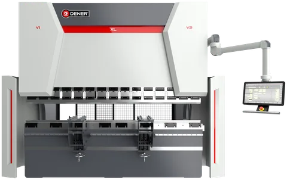
Hydraulic press brakes — CNC, hybrid and NC, 33 to 1,323 US tons (30 to 1,200 t)
The workhorse for plate and production: Dener XL CNC brakes to 661 US tons (600 t) and 20 ft, NovoTech's value-line CNC brakes to 1,323 tons (1,200 t) and 26 ft, the mild hybrid XL, and NC torsion-bar brakes from 33 tons (30 t).
4 machine families · all models, specifications and photos
-
Electric press brakes — servo-electric and ball-screw, 3 to 220 US tons (3 to 200 t)
No hydraulic oil: Dener DDM servo-electric brakes to 220 US tons (200 t) and 13 ft, the DDS ball-screw brake from 22 tons (20 t), and NovoTech's value-line electric brakes from 3 to 176 tons (3 to 160 t) — ±0.01 mm, twice the speed, about 70 % less power.
4 machine families · all models, specifications and photos
-
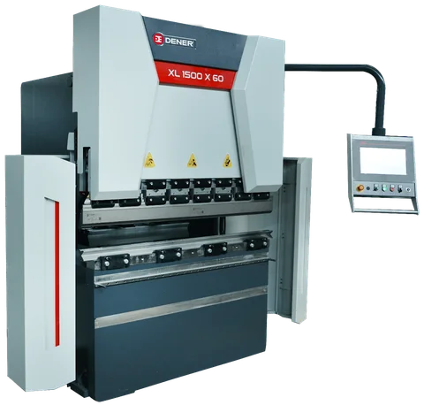
Compact hydraulic press brakes — 16 to 66 US tons (15 to 60 t), 2 to 8 ft
The press brakes for a sheet-metal shop: the Dener XL 1560 compact CNC brake, 66 US tons (60 t) × 5 ft, NovoTech's value-line WAD-50T CNC and WC67K-30T NC compacts over 4.3 – 5.2 ft, and the HBV bending brakes from 16 tons (15 t) for brackets and short parts in plate.
3 machine families · all models, specifications and photos
Line-up
Every press brakes family NovoTech sells, by brand — the specifications, photos and videos are on the section pages.
Dener press brakes — made in Turkey
Made in Turkey since 1974 — Dener Makina press brakes, shears, sheet and tube fiber lasers, panel benders and CNC machine tools, sold, installed and supported in Canada by NovoTech
Download the Dener hydraulic press brake brochure (PDF · 8 MB · imperial units) Download the Dener servo-electric press brake brochure (PDF · 14 MB · imperial units) Capacity table
-
Hydraulic press brakes
XL hydraulic CNC press brakes, 66 – 661 US tons (60 – 600 t) × 5 – 20 ft
XL 1560 – XL 60600 · 18 models
The Dener XL is the hydraulic press brake most Canadian shops buy from us: a stress-relieved monoblock frame, servo-valve hydraulics at constant pressure, Y1-Y2 ram axes and an X back gauge on ball screw and…
Specifications and photos -
Electric press brakes
DDM servo-electric CNC press brakes, 44 – 220 US tons (40 – 200 t) × 5 – 13.4 ft
DDM 4015 – DDM 20040 · 9 models
A full-electric press brake with no hydraulic oil: servo motors drive the ram through belts and pulleys, bending at 20 mm/s on every model — twice the speed of a hydraulic — with 0.01 mm ram repeatability and…
Specifications and photos -
Electric press brakes
DDS ball-screw electric press brakes, 22 and 44 US tons (20 and 40 t) × 3 – 4.3 ft
DDS 2090 · DDS 4013 · 2 models
The small electric press brake: Lenze servo motors on ball screws move the ram — no oil, no cylinders — in a compact monoblock frame with a small throat for precise bends on brackets, boxes, enclosures and…
Specifications and photos -
Compact press brakes
XL 1560 compact CNC press brake, 66 US tons (60 t) × 5 ft
XL 1560 · 1 model
66 US tons (60 t) × 5 ft · 15.7″ throat · ESA S840 2D · 9,480 lb · EUROSTAMP 1281 / 2067 tooling included
The smallest XL is the compact press brake of the premium line: 60 metric tons (66 US tons) over 1,550 mm (5 ft), 49″ between the frames, a 15.7″ throat and 16.1″ of daylight, on a 96 × 87″ footprint (64″ wide…
Specifications and photos
NovoTech value-line press brakes — built in China to North American standards
NovoTech's own brand: manufactured in China to high North American quality standards, with the same CSA-approved panel, 1-year warranty and parts and support in Canada as every machine we sell
Download the NovoTech hydraulic press brake brochure (PDF · 2 MB · imperial units) Download the NovoTech electric press brake brochure (PDF · 1 MB · imperial units) Capacity table
-
Hydraulic press brakes
CNC hydraulic press brakes, 55 – 331 US tons (50 – 300 t) × 4 – 20 ft
WAD-50T/1300 – WAD-300T/6000 · 25 models
The value-line CNC press brake: a welded, stress-relieved mono-block frame, electro-hydraulic servo synchronisation with servo valves and linear scales, a servo-driven pump that only runs while the ram moves…
Specifications and photos -
Hydraulic press brakes
NC hydraulic press brakes, 33 – 441 US tons (30 – 400 t) × 5 – 20 ft — torsion bar
WC67K-30t/1600 – WC67K/E-400T/6000 · 34 models
The simplest press brake we sell: a torsion bar keeps the two ram cylinders in step mechanically, mechanical stops set the depth and an Estun E21PS control positions the back gauge and the ram for 40 stored…
Specifications and photos -
Hydraulic press brakes
Heavy-duty CNC press brakes, 441 – 1,323 US tons (400 – 1,200 t) × 13 – 26 ft, and tandems
WAD-400T/4000 – WAD-1200T/8000 · 21 models · tandem to 60 ft
For plate work, poles, towers and long profiles: 400 to 1,200 t (441 to 1,323 US tons) machines with 13, 16, 20, 23 and 26 ft beds, 23.6″ throats, strokes to 15.7″ and 36″ daylight, twin pumps and twin servo motors from 800 t (882 US tons) up…
Specifications and photos -
Electric press brakes
Electric servo press brakes, 11 – 176 US tons (10 – 160 t) × 1.6 – 10.5 ft
WADG-10T/500 – WADG-160T/3200 · 10 models
A press brake without hydraulics: servo motors drive the ram through timing belts and dual lead ball screws, so there is no oil, no pump running between bends, no valves to drift and no warm-up — the ram…
Specifications and photos -
Electric press brakes
Compact electric servo press brakes, 3 – 13 US tons (3 – 12 t) × 8 – 24″
WADG-3T/200 · WADG-6T/400 · WADG-12T/600
Bench-size electric brakes for electronics enclosures, brackets, small appliance and instrument parts: 3, 6 and 12 t (3, 7 and 13 US tons) over 8, 16 and 24″, a 2 – 5.5 kW servo motor, 4.7″ stroke and 16.5″ daylight in a 28 – 33″…
Specifications and photos -
Compact press brakes
Compact CNC hydraulic press brakes, 55 US tons (50 t) × 4.3 and 5.2 ft
WAD-50T/1300 · WAD-50T/1600 · 2 models
55 US tons (50 t) × 4.3 / 5.2 ft · 4 axes · Delem DA-53Tx · 7,700 lb · servo pump
The two smallest WAD machines are the value line's compact CNC press brakes: 50 metric tons (55 US tons) over 1,300 or 1,600 mm (4.3 and 5.2 ft), 44 or 51″ between the frames, a 9.8″ throat, 5.9″ stroke and…
Specifications and photos -
Compact press brakes
Compact NC hydraulic press brake, 33 US tons (30 t) × 5.2 ft — torsion bar
WC67K-30T/1600 · 1 model
33 US tons (30 t) × 5.2 ft · torsion bar · Estun E21PS · 4,630 lb
The smallest torsion-bar press brake: 30 metric tons (33 US tons) over 1,600 mm (5.2 ft), 51″ between the frames, a 7.9″ throat and 13.2″ daylight, 4,630 lb on a 71 × 47″ footprint.
Specifications and photos -
Compact press brakes
HBV hydraulic bending brakes, 5/32″ × 24 – 48″, 3/16″ × 49″ and 1/8″ × 100″
HBV24 – HBV-2540 · 4 models
To 3/16″ × 49″, 1/8″ × 100″
Small hydraulic brakes for brackets, clips and short parts in plate.
Specifications and photos
Which kind of press brake?
The three kinds NovoTech sells, side by side. Tonnage, length and the material you bend decide; the pages explain each line and every model.
| Hydraulic press brakes | Electric press brakes | Compact press brakes | |
|---|---|---|---|
| Bends | Sheet and plate, 16 ga to 1/2″ and beyond | Sheet, 20 ga to 1/4″ (3/8″ on the largest) | Sheet to 8 ga; plate to 3/16″ in short parts |
| Force and length | 33 – 1,323 US tons (30 – 1,200 t) × 4 – 26 ft | 3 – 220 US tons (3 – 200 t) × 1.6 – 13 ft | 16 – 66 US tons (15 – 60 t) × 2 – 8 ft |
| Drive | Hydraulic cylinders; servo-driven pumps on the mild hybrid XL and the value-line WAD | Servo motors and ball screws, no hydraulic oil | Hydraulic cylinders, torsion bar; NC or 3-axis CNC |
| Strengths | Lowest price per ton, full force all stroke, widest range | ±0.01 mm, about twice the speed, ~70 % less power, clean and quiet | Small footprint, low price, full press-brake tooling and controls |
| Typical buyer | Steel fabricators, plate work, production shops | Job shops, sheet metal, enclosures, clean rooms | HVAC, enclosures, brackets, signage, maintenance shops |
| Page | Hydraulic press brakes | Electric press brakes | Compact press brakes |
The range at a glance
Every press brake model NovoTech sells, in one table: bending force and length, ram stroke, daylight and weight. Each row links to the full specification table on the hydraulic, electric or compact page.
| Model | Type | Bending force | Bending length | Stroke | Daylight | Weight |
|---|---|---|---|---|---|---|
| XL 1560XL hydraulic press brakes | Hydraulic press brakes | 66 US tons (60 t) | 5.1 ft · 61.0″ (1,550 mm) | 8.7″ (220 mm) | 16.1″ (410 mm) | 9,480 lb (4,300 kg) |
| XL 2060XL hydraulic press brakes | Hydraulic press brakes | 66 US tons (60 t) | 6.7 ft · 80.7″ (2,050 mm) | 8.7″ (220 mm) | 16.1″ (410 mm) | 10,803 lb (4,900 kg) |
| XL 26100XL hydraulic press brakes | Hydraulic press brakes | 110 US tons (100 t) | 8.5 ft · 102.4″ (2,600 mm) | 11.8″ (300 mm) | 20.9″ (530 mm) | 16,976 lb (7,700 kg) |
| XL 30100XL hydraulic press brakes | Hydraulic press brakes | 110 US tons (100 t) | 10 ft · 120″ (3,020 mm) | 11.8″ (300 mm) | 20.9″ (530 mm) | 19,180 lb (8,700 kg) |
| XL 30135XL hydraulic press brakes | Hydraulic press brakes | 149 US tons (135 t) | 10 ft · 120″ (3,020 mm) | 12.6″ (320 mm) | 21.7″ (550 mm) | 21,164 lb (9,600 kg) |
| XL 30175XL hydraulic press brakes | Hydraulic press brakes | 193 US tons (175 t) | 10 ft · 120″ (3,020 mm) | 13.8″ (350 mm) | 23.6″ (600 mm) | 25,574 lb (11,600 kg) |
| XL 30220XL hydraulic press brakes | Hydraulic press brakes | 243 US tons (220 t) | 10 ft · 120″ (3,020 mm) | 13.8″ (350 mm) | 23.6″ (600 mm) | 26,015 lb (11,800 kg) |
| XL 30320XL hydraulic press brakes | Hydraulic press brakes | 353 US tons (320 t) | 10 ft · 120″ (3,020 mm) | 15.7″ (400 mm) | 25.6″ (650 mm) | 32,628 lb (14,800 kg) |
| XL 36175XL hydraulic press brakes | Hydraulic press brakes | 193 US tons (175 t) | 12 ft · 143.7″ (3,650 mm) | 13.8″ (350 mm) | 23.6″ (600 mm) | 27,558 lb (12,500 kg) |
| XL 36220XL hydraulic press brakes | Hydraulic press brakes | 243 US tons (220 t) | 12 ft · 143.7″ (3,650 mm) | 13.8″ (350 mm) | 23.6″ (600 mm) | 27,999 lb (12,700 kg) |
| XL 40175XL hydraulic press brakes | Hydraulic press brakes | 193 US tons (175 t) | 13.3 ft · 159.4″ (4,050 mm) | 13.8″ (350 mm) | 23.6″ (600 mm) | 31,306 lb (14,200 kg) |
| XL 40220XL hydraulic press brakes | Hydraulic press brakes | 243 US tons (220 t) | 13.3 ft · 159.4″ (4,050 mm) | 13.8″ (350 mm) | 23.6″ (600 mm) | 31,526 lb (14,300 kg) |
| XL 40320XL hydraulic press brakes | Hydraulic press brakes | 353 US tons (320 t) | 13.3 ft · 159.4″ (4,050 mm) | 15.7″ (400 mm) | 25.6″ (650 mm) | 38,581 lb (17,500 kg) |
| XL 40400XL hydraulic press brakes | Hydraulic press brakes | 441 US tons (400 t) | 13.3 ft · 159.4″ (4,050 mm) | 15.7″ (400 mm) | 25.6″ (650 mm) | 55,115 lb (25,000 kg) |
| XL 60220XL hydraulic press brakes | Hydraulic press brakes | 243 US tons (220 t) | 19.8 ft · 238.2″ (6,050 mm) | 13.8″ (350 mm) | 23.6″ (600 mm) | 41,888 lb (19,000 kg) |
| XL 60320XL hydraulic press brakes | Hydraulic press brakes | 353 US tons (320 t) | 19.8 ft · 238.2″ (6,050 mm) | 13.8″ (350 mm) | 25.6″ (650 mm) | 50,927 lb (23,100 kg) |
| XL 60400XL hydraulic press brakes | Hydraulic press brakes | 441 US tons (400 t) | 19.8 ft · 238.2″ (6,050 mm) | 15.7″ (400 mm) | 25.6″ (650 mm) | 70,548 lb (32,000 kg) |
| XL 60600XL hydraulic press brakes | Hydraulic press brakes | 661 US tons (600 t) | 19.8 ft · 238.2″ (6,050 mm) | 17.7″ (450 mm) | 26.8″ (680 mm) | 113,979 lb (51,700 kg) |
| WAD-50T/1300CNC press brakes 50 – 300 t (55 – 331 US tons) | Hydraulic press brakes | 55 US tons (50 t) | 4.3 ft · 51.2″ (1,300 mm) | 5.9″ (150 mm) | 18.1″ (460 mm) | 7,716 lb (3,500 kg) |
| WAD-50T/1600CNC press brakes 50 – 300 t (55 – 331 US tons) | Hydraulic press brakes | 55 US tons (50 t) | 5.2 ft · 63.0″ (1,600 mm) | 5.9″ (150 mm) | 18.1″ (460 mm) | 7,716 lb (3,500 kg) |
| WAD-70T/2000CNC press brakes 50 – 300 t (55 – 331 US tons) | Hydraulic press brakes | 77 US tons (70 t) | 6.6 ft · 78.7″ (2,000 mm) | 5.9″ (150 mm) | 18.1″ (460 mm) | 9,259 lb (4,200 kg) |
| WAD-70T/2500CNC press brakes 50 – 300 t (55 – 331 US tons) | Hydraulic press brakes | 77 US tons (70 t) | 8.2 ft · 98.4″ (2,500 mm) | 5.9″ (150 mm) | 18.1″ (460 mm) | 9,700 lb (4,400 kg) |
| WAD-80T/2500CNC press brakes 50 – 300 t (55 – 331 US tons) | Hydraulic press brakes | 88 US tons (80 t) | 8.2 ft · 98.4″ (2,500 mm) | 5.9″ (150 mm) | 18.1″ (460 mm) | 12,346 lb (5,600 kg) |
| WAD-110T/3200CNC press brakes 50 – 300 t (55 – 331 US tons) | Hydraulic press brakes | 121 US tons (110 t) | 10.5 ft · 126.0″ (3,200 mm) | 7.9″ (200 mm) | 18.9″ (480 mm) | 16,535 lb (7,500 kg) |
| WAD-110T/4100CNC press brakes 50 – 300 t (55 – 331 US tons) | Hydraulic press brakes | 121 US tons (110 t) | 13.5 ft · 161.4″ (4,100 mm) | 7.9″ (200 mm) | 18.9″ (480 mm) | 19,180 lb (8,700 kg) |
| WAD-135T/3200CNC press brakes 50 – 300 t (55 – 331 US tons) | Hydraulic press brakes | 149 US tons (135 t) | 10.5 ft · 126.0″ (3,200 mm) | 7.9″ (200 mm) | 18.9″ (480 mm) | 19,401 lb (8,800 kg) |
| WAD-135T/4100CNC press brakes 50 – 300 t (55 – 331 US tons) | Hydraulic press brakes | 149 US tons (135 t) | 13.5 ft · 161.4″ (4,100 mm) | 7.9″ (200 mm) | 18.9″ (480 mm) | 23,149 lb (10,500 kg) |
| WAD-170T/3200CNC press brakes 50 – 300 t (55 – 331 US tons) | Hydraulic press brakes | 187 US tons (170 t) | 10.5 ft · 126.0″ (3,200 mm) | 7.9″ (200 mm) | 18.9″ (480 mm) | 23,810 lb (10,800 kg) |
| WAD-170T/4100CNC press brakes 50 – 300 t (55 – 331 US tons) | Hydraulic press brakes | 187 US tons (170 t) | 13.5 ft · 161.4″ (4,100 mm) | 7.9″ (200 mm) | 18.9″ (480 mm) | 27,558 lb (12,500 kg) |
| WAD-170T/5000CNC press brakes 50 – 300 t (55 – 331 US tons) | Hydraulic press brakes | 187 US tons (170 t) | 16.4 ft · 196.9″ (5,000 mm) | 7.9″ (200 mm) | 18.9″ (480 mm) | 29,542 lb (13,400 kg) |
| WAD-170T/6000CNC press brakes 50 – 300 t (55 – 331 US tons) | Hydraulic press brakes | 187 US tons (170 t) | 19.7 ft · 236.2″ (6,000 mm) | 7.9″ (200 mm) | 18.9″ (480 mm) | 42,990 lb (19,500 kg) |
| WAD-220T/3200CNC press brakes 50 – 300 t (55 – 331 US tons) | Hydraulic press brakes | 243 US tons (220 t) | 10.5 ft · 126.0″ (3,200 mm) | 7.9″ (200 mm) | 18.9″ (480 mm) | 27,558 lb (12,500 kg) |
| WAD-220T/4100CNC press brakes 50 – 300 t (55 – 331 US tons) | Hydraulic press brakes | 243 US tons (220 t) | 13.5 ft · 161.4″ (4,100 mm) | 7.9″ (200 mm) | 18.9″ (480 mm) | 32,187 lb (14,600 kg) |
| WAD-220T/5000CNC press brakes 50 – 300 t (55 – 331 US tons) | Hydraulic press brakes | 243 US tons (220 t) | 16.4 ft · 196.9″ (5,000 mm) | 7.9″ (200 mm) | 18.9″ (480 mm) | 38,581 lb (17,500 kg) |
| WAD-220T/6000CNC press brakes 50 – 300 t (55 – 331 US tons) | Hydraulic press brakes | 243 US tons (220 t) | 19.7 ft · 236.2″ (6,000 mm) | 7.9″ (200 mm) | 18.9″ (480 mm) | 45,195 lb (20,500 kg) |
| WAD-250T/3200CNC press brakes 50 – 300 t (55 – 331 US tons) | Hydraulic press brakes | 276 US tons (250 t) | 10.5 ft · 126.0″ (3,200 mm) | 9.8″ (250 mm) | 21.3″ (540 mm) | 36,376 lb (16,500 kg) |
| WAD-250T/4000CNC press brakes 50 – 300 t (55 – 331 US tons) | Hydraulic press brakes | 276 US tons (250 t) | 13.1 ft · 157.5″ (4,000 mm) | 9.8″ (250 mm) | 21.3″ (540 mm) | 36,597 lb (16,600 kg) |
| WAD-250T/5000CNC press brakes 50 – 300 t (55 – 331 US tons) | Hydraulic press brakes | 276 US tons (250 t) | 16.4 ft · 196.9″ (5,000 mm) | 9.8″ (250 mm) | 21.3″ (540 mm) | 45,195 lb (20,500 kg) |
| WAD-250T/6000CNC press brakes 50 – 300 t (55 – 331 US tons) | Hydraulic press brakes | 276 US tons (250 t) | 19.7 ft · 236.2″ (6,000 mm) | 9.8″ (250 mm) | 21.3″ (540 mm) | 56,218 lb (25,500 kg) |
| WAD-300T/3200CNC press brakes 50 – 300 t (55 – 331 US tons) | Hydraulic press brakes | 331 US tons (300 t) | 10.5 ft · 126.0″ (3,200 mm) | 9.8″ (250 mm) | 22.4″ (570 mm) | 41,447 lb (18,800 kg) |
| WAD-300T/4000CNC press brakes 50 – 300 t (55 – 331 US tons) | Hydraulic press brakes | 331 US tons (300 t) | 13.1 ft · 157.5″ (4,000 mm) | 9.8″ (250 mm) | 22.4″ (570 mm) | 43,872 lb (19,900 kg) |
| WAD-300T/5000CNC press brakes 50 – 300 t (55 – 331 US tons) | Hydraulic press brakes | 331 US tons (300 t) | 16.4 ft · 196.9″ (5,000 mm) | 9.8″ (250 mm) | 22.4″ (570 mm) | 57,982 lb (26,300 kg) |
| WAD-300T/6000CNC press brakes 50 – 300 t (55 – 331 US tons) | Hydraulic press brakes | 331 US tons (300 t) | 19.7 ft · 236.2″ (6,000 mm) | 9.8″ (250 mm) | 22.4″ (570 mm) | 65,477 lb (29,700 kg) |
| WC67K-30t/1600NC press brakes 30 – 400 t (33 – 441 US tons) | Hydraulic press brakes | 33 US tons (30 t) | 5.2 ft · 63.0″ (1,600 mm) | 3.1″ (80 mm) | 13.2″ (335 mm) | 4,630 lb (2,100 kg) |
| WC67K/E-30t/2000NC press brakes 30 – 400 t (33 – 441 US tons) | Hydraulic press brakes | 33 US tons (30 t) | 6.6 ft · 78.7″ (2,000 mm) | 3.1″ (80 mm) | 13.2″ (335 mm) | 5,071 lb (2,300 kg) |
| WC67K/E-40t/2500NC press brakes 30 – 400 t (33 – 441 US tons) | Hydraulic press brakes | 44 US tons (40 t) | 8.2 ft · 98.4″ (2,500 mm) | 3.9″ (100 mm) | 14.0″ (355 mm) | 7,055 lb (3,200 kg) |
| WC67K-63t/2500NC press brakes 30 – 400 t (33 – 441 US tons) | Hydraulic press brakes | 69 US tons (63 t) | 8.2 ft · 98.4″ (2,500 mm) | 4.7″ (120 mm) | 14.6″ (370 mm) | 9,039 lb (4,100 kg) |
| WC67K/E-80t/2500NC press brakes 30 – 400 t (33 – 441 US tons) | Hydraulic press brakes | 88 US tons (80 t) | 8.2 ft · 98.4″ (2,500 mm) | 4.7″ (120 mm) | 15.0″ (380 mm) | 10,141 lb (4,600 kg) |
| WC67K/E-100t/2500NC press brakes 30 – 400 t (33 – 441 US tons) | Hydraulic press brakes | 110 US tons (100 t) | 8.2 ft · 98.4″ (2,500 mm) | 6.3″ (160 mm) | 16.9″ (430 mm) | 12,346 lb (5,600 kg) |
| WC67K-100t/3200NC press brakes 30 – 400 t (33 – 441 US tons) | Hydraulic press brakes | 110 US tons (100 t) | 10.5 ft · 126.0″ (3,200 mm) | 6.3″ (160 mm) | 16.9″ (430 mm) | 14,771 lb (6,700 kg) |
| WC67K-100t/4000NC press brakes 30 – 400 t (33 – 441 US tons) | Hydraulic press brakes | 110 US tons (100 t) | 13.1 ft · 157.5″ (4,000 mm) | 6.3″ (160 mm) | 16.9″ (430 mm) | 18,519 lb (8,400 kg) |
| WC67K/E-125t/2500NC press brakes 30 – 400 t (33 – 441 US tons) | Hydraulic press brakes | 138 US tons (125 t) | 8.2 ft · 98.4″ (2,500 mm) | 6.3″ (160 mm) | 16.9″ (430 mm) | 13,889 lb (6,300 kg) |
| WC67K-125t/3200NC press brakes 30 – 400 t (33 – 441 US tons) | Hydraulic press brakes | 138 US tons (125 t) | 10.5 ft · 126.0″ (3,200 mm) | 6.3″ (160 mm) | 16.9″ (430 mm) | 15,653 lb (7,100 kg) |
| WC67K-125t/4000NC press brakes 30 – 400 t (33 – 441 US tons) | Hydraulic press brakes | 138 US tons (125 t) | 13.1 ft · 157.5″ (4,000 mm) | 6.3″ (160 mm) | 16.9″ (430 mm) | 19,842 lb (9,000 kg) |
| WC67K/E-125t/5000NC press brakes 30 – 400 t (33 – 441 US tons) | Hydraulic press brakes | 138 US tons (125 t) | 16.4 ft · 196.9″ (5,000 mm) | 6.3″ (160 mm) | 16.9″ (430 mm) | 25,353 lb (11,500 kg) |
| WC67K/E-125t/6000NC press brakes 30 – 400 t (33 – 441 US tons) | Hydraulic press brakes | 138 US tons (125 t) | 19.7 ft · 236.2″ (6,000 mm) | 6.3″ (160 mm) | 16.9″ (430 mm) | 32,187 lb (14,600 kg) |
| WC67K/E-160t/2500NC press brakes 30 – 400 t (33 – 441 US tons) | Hydraulic press brakes | 176 US tons (160 t) | 8.2 ft · 98.4″ (2,500 mm) | 7.9″ (200 mm) | 18.9″ (480 mm) | 18,960 lb (8,600 kg) |
| WC67K-160t/3200NC press brakes 30 – 400 t (33 – 441 US tons) | Hydraulic press brakes | 176 US tons (160 t) | 10.5 ft · 126.0″ (3,200 mm) | 7.9″ (200 mm) | 18.9″ (480 mm) | 21,605 lb (9,800 kg) |
| WC67K-160t/4000NC press brakes 30 – 400 t (33 – 441 US tons) | Hydraulic press brakes | 176 US tons (160 t) | 13.1 ft · 157.5″ (4,000 mm) | 7.9″ (200 mm) | 18.9″ (480 mm) | 25,353 lb (11,500 kg) |
| WC67K/E-160t/5000NC press brakes 30 – 400 t (33 – 441 US tons) | Hydraulic press brakes | 176 US tons (160 t) | 16.4 ft · 196.9″ (5,000 mm) | 7.9″ (200 mm) | 18.9″ (480 mm) | 29,762 lb (13,500 kg) |
| WC67K/E-160t/6000NC press brakes 30 – 400 t (33 – 441 US tons) | Hydraulic press brakes | 176 US tons (160 t) | 19.7 ft · 236.2″ (6,000 mm) | 7.9″ (200 mm) | 18.9″ (480 mm) | 36,376 lb (16,500 kg) |
| WC67K-200T/3200NC press brakes 30 – 400 t (33 – 441 US tons) | Hydraulic press brakes | 220 US tons (200 t) | 10.5 ft · 126.0″ (3,200 mm) | 7.9″ (200 mm) | 18.9″ (480 mm) | 25,133 lb (11,400 kg) |
| WC67K-200T/4000NC press brakes 30 – 400 t (33 – 441 US tons) | Hydraulic press brakes | 220 US tons (200 t) | 13.1 ft · 157.5″ (4,000 mm) | 7.9″ (200 mm) | 18.9″ (480 mm) | 30,203 lb (13,700 kg) |
| WC67K/E-200T/5000NC press brakes 30 – 400 t (33 – 441 US tons) | Hydraulic press brakes | 220 US tons (200 t) | 16.4 ft · 196.9″ (5,000 mm) | 7.9″ (200 mm) | 18.9″ (480 mm) | 36,156 lb (16,400 kg) |
| WC67K/E-200T/6000NC press brakes 30 – 400 t (33 – 441 US tons) | Hydraulic press brakes | 220 US tons (200 t) | 19.7 ft · 236.2″ (6,000 mm) | 7.9″ (200 mm) | 18.9″ (480 mm) | 49,604 lb (22,500 kg) |
| WC67K-250T/3200NC press brakes 30 – 400 t (33 – 441 US tons) | Hydraulic press brakes | 276 US tons (250 t) | 10.5 ft · 126.0″ (3,200 mm) | 9.8″ (250 mm) | 22.8″ (580 mm) | 34,172 lb (15,500 kg) |
| WC67K-250T/4000NC press brakes 30 – 400 t (33 – 441 US tons) | Hydraulic press brakes | 276 US tons (250 t) | 13.1 ft · 157.5″ (4,000 mm) | 9.8″ (250 mm) | 22.8″ (580 mm) | 38,801 lb (17,600 kg) |
| WC67K/E-250T/5000NC press brakes 30 – 400 t (33 – 441 US tons) | Hydraulic press brakes | 276 US tons (250 t) | 16.4 ft · 196.9″ (5,000 mm) | 9.8″ (250 mm) | 22.8″ (580 mm) | 46,297 lb (21,000 kg) |
| WC67K/E-250T/6000NC press brakes 30 – 400 t (33 – 441 US tons) | Hydraulic press brakes | 276 US tons (250 t) | 19.7 ft · 236.2″ (6,000 mm) | 9.8″ (250 mm) | 22.8″ (580 mm) | 51,809 lb (23,500 kg) |
| WC67K-300T/3200NC press brakes 30 – 400 t (33 – 441 US tons) | Hydraulic press brakes | 331 US tons (300 t) | 10.5 ft · 126.0″ (3,200 mm) | 9.8″ (250 mm) | 22.8″ (580 mm) | 37,699 lb (17,100 kg) |
| WC67K-300T/4000NC press brakes 30 – 400 t (33 – 441 US tons) | Hydraulic press brakes | 331 US tons (300 t) | 13.1 ft · 157.5″ (4,000 mm) | 9.8″ (250 mm) | 22.8″ (580 mm) | 41,447 lb (18,800 kg) |
| WC67K/E-300T/5000NC press brakes 30 – 400 t (33 – 441 US tons) | Hydraulic press brakes | 331 US tons (300 t) | 16.4 ft · 196.9″ (5,000 mm) | 9.8″ (250 mm) | 22.8″ (580 mm) | 52,911 lb (24,000 kg) |
| WC67K/E-300T/6000NC press brakes 30 – 400 t (33 – 441 US tons) | Hydraulic press brakes | 331 US tons (300 t) | 19.7 ft · 236.2″ (6,000 mm) | 9.8″ (250 mm) | 22.8″ (580 mm) | 61,729 lb (28,000 kg) |
| WC67K/E-400T/3200NC press brakes 30 – 400 t (33 – 441 US tons) | Hydraulic press brakes | 441 US tons (400 t) | 10.5 ft · 126.0″ (3,200 mm) | 9.8″ (250 mm) | 22.8″ (580 mm) | 44,754 lb (20,300 kg) |
| WC67K/E-400T/4000NC press brakes 30 – 400 t (33 – 441 US tons) | Hydraulic press brakes | 441 US tons (400 t) | 13.1 ft · 157.5″ (4,000 mm) | 9.8″ (250 mm) | 22.8″ (580 mm) | 52,470 lb (23,800 kg) |
| WC67K/E-400T/5000NC press brakes 30 – 400 t (33 – 441 US tons) | Hydraulic press brakes | 441 US tons (400 t) | 16.4 ft · 196.9″ (5,000 mm) | 9.8″ (250 mm) | 22.8″ (580 mm) | 61,509 lb (27,900 kg) |
| WC67K/E-400T/6000NC press brakes 30 – 400 t (33 – 441 US tons) | Hydraulic press brakes | 441 US tons (400 t) | 19.7 ft · 236.2″ (6,000 mm) | 9.8″ (250 mm) | 22.8″ (580 mm) | 72,752 lb (33,000 kg) |
| WAD-400T/4000Heavy-duty & tandem press brakes | Hydraulic press brakes | 441 US tons (400 t) | 13.1 ft · 157.5″ (4,000 mm) | 11.8″ (300 mm) | 24.0″ (610 mm) | 54,675 lb (24,800 kg) |
| WAD-400T/5000Heavy-duty & tandem press brakes | Hydraulic press brakes | 441 US tons (400 t) | 16.4 ft · 196.9″ (5,000 mm) | 11.8″ (300 mm) | 24.0″ (610 mm) | 66,139 lb (30,000 kg) |
| WAD-400T/6000Heavy-duty & tandem press brakes | Hydraulic press brakes | 441 US tons (400 t) | 19.7 ft · 236.2″ (6,000 mm) | 11.8″ (300 mm) | 24.0″ (610 mm) | 78,264 lb (35,500 kg) |
| WAD-500T/4000Heavy-duty & tandem press brakes | Hydraulic press brakes | 551 US tons (500 t) | 13.1 ft · 157.5″ (4,000 mm) | 11.8″ (300 mm) | 24.0″ (610 mm) | 73,855 lb (33,500 kg) |
| WAD-500T/5000Heavy-duty & tandem press brakes | Hydraulic press brakes | 551 US tons (500 t) | 16.4 ft · 196.9″ (5,000 mm) | 11.8″ (300 mm) | 24.0″ (610 mm) | 79,807 lb (36,200 kg) |
| WAD-500T/6000Heavy-duty & tandem press brakes | Hydraulic press brakes | 551 US tons (500 t) | 19.7 ft · 236.2″ (6,000 mm) | 11.8″ (300 mm) | 24.0″ (610 mm) | 92,153 lb (41,800 kg) |
| WAD-600T/4000Heavy-duty & tandem press brakes | Hydraulic press brakes | 661 US tons (600 t) | 13.1 ft · 157.5″ (4,000 mm) | 12.6″ (320 mm) | 25.6″ (650 mm) | 95,019 lb (43,100 kg) |
| WAD-600T/5000Heavy-duty & tandem press brakes | Hydraulic press brakes | 661 US tons (600 t) | 16.4 ft · 196.9″ (5,000 mm) | 12.6″ (320 mm) | 25.6″ (650 mm) | 106,483 lb (48,300 kg) |
| WAD-600T/6000Heavy-duty & tandem press brakes | Hydraulic press brakes | 661 US tons (600 t) | 19.7 ft · 236.2″ (6,000 mm) | 12.6″ (320 mm) | 25.6″ (650 mm) | 123,900 lb (56,200 kg) |
| WAD-800T/4000Heavy-duty & tandem press brakes | Hydraulic press brakes | 882 US tons (800 t) | 13.1 ft · 157.5″ (4,000 mm) | 12.6″ (320 mm) | 31.5″ (800 mm) | 125,663 lb (57,000 kg) |
| WAD-800T/5000Heavy-duty & tandem press brakes | Hydraulic press brakes | 882 US tons (800 t) | 16.4 ft · 196.9″ (5,000 mm) | 12.6″ (320 mm) | 31.5″ (800 mm) | 145,505 lb (66,000 kg) |
| WAD-800T/6000Heavy-duty & tandem press brakes | Hydraulic press brakes | 882 US tons (800 t) | 19.7 ft · 236.2″ (6,000 mm) | 12.6″ (320 mm) | 31.5″ (800 mm) | 163,142 lb (74,000 kg) |
| WAD-800T/8000Heavy-duty & tandem press brakes | Hydraulic press brakes | 882 US tons (800 t) | 26.2 ft · 315.0″ (8,000 mm) | 12.6″ (320 mm) | 31.5″ (800 mm) | 192,904 lb (87,500 kg) |
| WAD-1000T/5000Heavy-duty & tandem press brakes | Hydraulic press brakes | 1,102 US tons (1000 t) | 16.4 ft · 196.9″ (5,000 mm) | 15.7″ (400 mm) | 36.2″ (920 mm) | 171,960 lb (78,000 kg) |
| WAD-1000T/6000Heavy-duty & tandem press brakes | Hydraulic press brakes | 1,102 US tons (1000 t) | 19.7 ft · 236.2″ (6,000 mm) | 15.7″ (400 mm) | 36.2″ (920 mm) | 194,007 lb (88,000 kg) |
| WAD-1000T/7000Heavy-duty & tandem press brakes | Hydraulic press brakes | 1,102 US tons (1000 t) | 23 ft · 275.6″ (7,000 mm) | 15.7″ (400 mm) | 36.2″ (920 mm) | 211,644 lb (96,000 kg) |
| WAD-1000T/8000Heavy-duty & tandem press brakes | Hydraulic press brakes | 1,102 US tons (1000 t) | 26.2 ft · 315.0″ (8,000 mm) | 15.7″ (400 mm) | 36.2″ (920 mm) | 233,690 lb (106,000 kg) |
| WAD-1200T/5000Heavy-duty & tandem press brakes | Hydraulic press brakes | 1,323 US tons (1200 t) | 16.4 ft · 196.9″ (5,000 mm) | 15.7″ (400 mm) | 36.2″ (920 mm) | 213,848 lb (97,000 kg) |
| WAD-1200T/6000Heavy-duty & tandem press brakes | Hydraulic press brakes | 1,323 US tons (1200 t) | 19.7 ft · 236.2″ (6,000 mm) | 15.7″ (400 mm) | 36.2″ (920 mm) | 233,690 lb (106,000 kg) |
| WAD-1200T/7000Heavy-duty & tandem press brakes | Hydraulic press brakes | 1,323 US tons (1200 t) | 23 ft · 275.6″ (7,000 mm) | 15.7″ (400 mm) | 36.2″ (920 mm) | 249,122 lb (113,000 kg) |
| WAD-1200T/8000Heavy-duty & tandem press brakes | Hydraulic press brakes | 1,323 US tons (1200 t) | 26.2 ft · 315.0″ (8,000 mm) | 15.7″ (400 mm) | 36.2″ (920 mm) | 271,168 lb (123,000 kg) |
| DDM 4015DDM servo-electric press brakes | Electric press brakes | 44 US tons (40 t) | 5 ft · 60.2″ (1,530 mm) | 11.8″ (300 mm) | 23.2″ (590 mm) | 10,141 lb (4,600 kg) |
| DDM 5020DDM servo-electric press brakes | Electric press brakes | 55 US tons (50 t) | 6.7 ft · 80.3″ (2,040 mm) | 11.8″ (300 mm) | 23.2″ (590 mm) | 11,464 lb (5,200 kg) |
| DDM 6525DDM servo-electric press brakes | Electric press brakes | 72 US tons (65 t) | 8.4 ft · 100.4″ (2,550 mm) | 11.8″ (300 mm) | 23.2″ (590 mm) | 13,007 lb (5,900 kg) |
| DDM 8025DDM servo-electric press brakes | Electric press brakes | 88 US tons (80 t) | 8.4 ft · 100.4″ (2,550 mm) | 11.8″ (300 mm) | 23.2″ (590 mm) | 13,228 lb (6,000 kg) |
| DDM 10030DDM servo-electric press brakes | Electric press brakes | 110 US tons (100 t) | 10 ft · 120.1″ (3,050 mm) | 11.8″ (300 mm) | 23.2″ (590 mm) | 14,991 lb (6,800 kg) |
| DDM 13030DDM servo-electric press brakes | Electric press brakes | 143 US tons (130 t) | 10 ft · 120.1″ (3,050 mm) | 11.8″ (300 mm) | 23.2″ (590 mm) | 18,298 lb (8,300 kg) |
| DDM 15030DDM servo-electric press brakes | Electric press brakes | 165 US tons (150 t) | 10 ft · 120.1″ (3,050 mm) | 11.8″ (300 mm) | 23.2″ (590 mm) | 27,558 lb (12,500 kg) |
| DDM 17535DDM servo-electric press brakes | Electric press brakes | 193 US tons (175 t) | 11.7 ft · 140.6″ (3,570 mm) | 11.8″ (300 mm) | 23.2″ (590 mm) | 30,865 lb (14,000 kg) |
| DDM 20040DDM servo-electric press brakes | Electric press brakes | 220 US tons (200 t) | 13.4 ft · 160.6″ (4,080 mm) | 11.8″ (300 mm) | 23.2″ (590 mm) | 34,172 lb (15,500 kg) |
| DDS 4013DDS ball-screw press brakes | Electric press brakes | 44 US tons (40 t) | 4.3 ft · 51.2″ (1,300 mm) | 5.9″ (150 mm) | 14.8″ (376 mm) | 7,496 lb (3,400 kg) |
| DDS 2090DDS ball-screw press brakes | Electric press brakes | 22 US tons (20 t) | 3 ft · 35.4″ (900 mm) | 5.9″ (150 mm) | 14.8″ (376 mm) | 4,409 lb (2,000 kg) |
| WADG-10T/500Electric press brakes 10 – 160 t (11 – 176 US tons) | Electric press brakes | 11 US tons (10 t) | 1.6 ft · 19.7″ (500 mm) | 5.9″ (150 mm) | 16.5″ (420 mm) | 1,764 lb (800 kg) |
| WADG-20T/800Electric press brakes 10 – 160 t (11 – 176 US tons) | Electric press brakes | 22 US tons (20 t) | 2.6 ft · 31.5″ (800 mm) | 5.9″ (150 mm) | 16.5″ (420 mm) | 6,834 lb (3,100 kg) |
| WADG-30T/1250Electric press brakes 10 – 160 t (11 – 176 US tons) | Electric press brakes | 33 US tons (30 t) | 4.1 ft · 49.2″ (1,250 mm) | 5.9″ (150 mm) | 16.5″ (420 mm) | 9,083 lb (4,120 kg) |
| WADG-40T/1300Electric press brakes 10 – 160 t (11 – 176 US tons) | Electric press brakes | 44 US tons (40 t) | 4.3 ft · 51.2″ (1,300 mm) | 5.9″ (150 mm) | 16.5″ (420 mm) | 9,921 lb (4,500 kg) |
| WADG-40T/1600Electric press brakes 10 – 160 t (11 – 176 US tons) | Electric press brakes | 44 US tons (40 t) | 5.2 ft · 63.0″ (1,600 mm) | 5.9″ (150 mm) | 16.5″ (420 mm) | 10,692 lb (4,850 kg) |
| WADG-50T/1600Electric press brakes 10 – 160 t (11 – 176 US tons) | Electric press brakes | 55 US tons (50 t) | 5.2 ft · 63.0″ (1,600 mm) | 5.9″ (150 mm) | 16.5″ (420 mm) | 10,803 lb (4,900 kg) |
| WADG-60T/2000Electric press brakes 10 – 160 t (11 – 176 US tons) | Electric press brakes | 66 US tons (60 t) | 6.6 ft · 78.7″ (2,000 mm) | 7.9″ (200 mm) | 18.5″ (470 mm) | 13,228 lb (6,000 kg) |
| WADG-80T/2500Electric press brakes 10 – 160 t (11 – 176 US tons) | Electric press brakes | 88 US tons (80 t) | 8.2 ft · 98.4″ (2,500 mm) | 7.9″ (200 mm) | 18.5″ (470 mm) | 19,621 lb (8,900 kg) |
| WADG-100T/3200Electric press brakes 10 – 160 t (11 – 176 US tons) | Electric press brakes | 110 US tons (100 t) | 10.5 ft · 126.0″ (3,200 mm) | 7.9″ (200 mm) | 18.5″ (470 mm) | 23,589 lb (10,700 kg) |
| WADG-160T/3200Electric press brakes 10 – 160 t (11 – 176 US tons) | Electric press brakes | 176 US tons (160 t) | 10.5 ft · 126.0″ (3,200 mm) | 9.8″ (250 mm) | 20.5″ (520 mm) | 26,015 lb (11,800 kg) |
| WADG-3T/200Compact electric press brakes | Electric press brakes | 3 US tons (3 t) | 7.9″ (200 mm) | 4.7″ (120 mm) | 16.5″ (420 mm) | 705 lb (320 kg) |
| WADG-6T/400Compact electric press brakes | Electric press brakes | 7 US tons (6 t) | 15.7″ (400 mm) | 4.7″ (120 mm) | 16.5″ (420 mm) | 1,235 lb (560 kg) |
| WADG-12T/600Compact electric press brakes | Electric press brakes | 13 US tons (12 t) | 23.6″ (600 mm) | 4.7″ (120 mm) | 16.5″ (420 mm) | 1,676 lb (760 kg) |
| XL 1560XL 1560 compact press brake | Compact press brakes | 66 US tons (60 t) | 5.1 ft · 61.0″ (1,550 mm) | 8.7″ (220 mm) | 16.1″ (410 mm) | 9,480 lb (4,300 kg) |
| WAD-50T/1300Compact CNC press brakes 50 t (55 US tons) | Compact press brakes | 55 US tons (50 t) | 4.3 ft · 51.2″ (1,300 mm) | 5.9″ (150 mm) | 18.1″ (460 mm) | 7,716 lb (3,500 kg) |
| WAD-50T/1600Compact CNC press brakes 50 t (55 US tons) | Compact press brakes | 55 US tons (50 t) | 5.2 ft · 63.0″ (1,600 mm) | 5.9″ (150 mm) | 18.1″ (460 mm) | 7,716 lb (3,500 kg) |
| WC67K-30t/1600Compact NC press brake 30 t (33 US tons) | Compact press brakes | 33 US tons (30 t) | 5.2 ft · 63.0″ (1,600 mm) | 3.1″ (80 mm) | 13.2″ (335 mm) | 4,630 lb (2,100 kg) |
Bending force in US tons (metric tonnes); the mild hybrid (SVP) packages fit the XL frames, so stroke and daylight are those of the XL of the same tonnage. Three-phase machines are supplied for 600 V as standard with a CSA-approved panel; 208, 240 and 480 V on request.
Included with every press brake from NovoTech
- CSA-approved electrical panelEvery machine ships with a CSA-approved panel, wired for Canadian voltage.
- Parts and support in CanadaSpare parts and technical support readily available from Mississauga, ON, Canada.
- 7-day money-back guaranteeTry the machine in your shop — full refund within 7 days on in-stock models.
- 1-year warrantyOn every new machine we sell, with parts and service from Mississauga, ON, Canada.
- Three kinds, two lines, one supplierHydraulic, electric or compact press brakes in two lines: the premium line, built by Dener in Kayseri, Turkey, and the NovoTech value line, manufactured in China to high North American quality standards.
- Installation and training — free in the GTAOn every press brake delivered in the Greater Toronto Area, NovoTech's technicians commission the machine and train your operators at no charge. Elsewhere in Canada on request, at an additional charge.
- Remote troubleshooting by video callOur technicians diagnose faults and guide your operator through the fix over a video call.
- Free delivery in the GTA on factory ordersA press brake ordered from the factory is delivered to your door anywhere in the Greater Toronto Area at no charge; unloading at your plant is the buyer's. In-stock machines, and deliveries elsewhere in Canada and the United States, ship at freight rates quoted by NovoTech.
- Financing with 0% downLease or finance the machine with 0% down and competitive rates through our financing partners — keep your cash working in the shop.
- Order today with 10% downSimple payment terms: 10% down payment to place your order, the remaining 90% before shipping from our warehouse in Mississauga, ON, Canada.
- 5% off your second machineReturning customers get 5% off their next machine from NovoTech — our thank-you for coming back.
Three-phase machines are supplied for 600 V; 208 V, 240 V or 480 V 3-phase available on request.
Press brake buying guide
What we go through with customers before they buy a press brake: air bending and the V-die, the tonnage and length a part needs, hydraulic, hybrid or electric drives, CNC axes and crowning, tooling, and the safety review. Written by NovoTech's sales engineers and technicians from years of installing machines in Canada.
How does a press brake bend?
A press brake bends sheet and plate by pressing it with a punch (the upper tool) into a V-shaped die (the lower tool). Almost all CNC bending today is air bending: the punch pushes the sheet into the V without forcing it against the die walls, and the angle is set by how deep the punch goes. The same punch and die make 90°, 120° or 135° bends, and the CNC controls the depth to a few ten-thousandths of an inch. Two older methods are still used. Bottoming presses the sheet against the die faces for very consistent angles in thin sheet and takes several times the force. Coining stamps the punch tip into the sheet and takes five to ten times the force, so on a modern CNC brake it is rarely worth it.
In air bending the inside radius comes from the die opening, not from the punch. In mild steel it comes out at about 15 – 17 % of the V (a 2″ V gives about a 5/16″ inside radius), in 304 stainless about 20 – 22 % and in soft aluminum about 13 – 15 %. That is why the V opening is the first decision for every bend, and it also decides the tonnage.
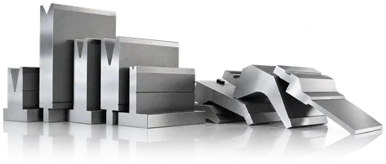
How much tonnage and length do I need?
The force for a 90° air bend is the EUROSTAMP formula that every tooling and press brake maker's chart is built on: F = S² × 2 × R ÷ (1.4 × V) tonnes per metre of bend, with the sheet thickness S and the V opening V in millimetres and the tensile strength R in kg/mm² — 47 for mild steel (the value behind the EUROSTAMP and Dener bending charts), 70 for stainless steel, 20 – 25 for aluminum. In inches and US tons per foot the same formula reads 575 × t² ÷ V for mild steel. The V opening sets the force as much as the thickness does: use a V of about 6 × the thickness up to 2.5 mm, 8 × from 3 to 8 mm, 10 × at 9 – 10 mm and 12 × from 12 mm up, which also keeps the outside of the bend from cracking. A wider V needs less force and leaves a larger inside radius (about V ÷ 6) and a longer minimum flange (about 0.7 × V).
| Thickness | V opening≈ 8 × thickness | Force per metre | Force per foot | 10 ft bend3,050 mm | Press brake to choose+20 % reserve |
|---|---|---|---|---|---|
| 20 ga0.035″ | 6 mm0.24″ | 9 t/m | 3.0 US t/ft | 28 t30 US tons | 35 t39 US tons |
| 18 ga0.047″ | 8 mm0.31″ | 12 t/m | 4.1 US t/ft | 37 t41 US tons | 45 t50 US tons |
| 16 ga0.059″ | 8 mm0.31″ | 19 t/m | 6.3 US t/ft | 58 t63 US tons | 70 t77 US tons |
| 14 ga0.075″ | 12 mm0.47″ | 20 t/m | 6.8 US t/ft | 62 t68 US tons | 75 t83 US tons |
| 12 ga0.106″ | 20 mm0.79″ | 24 t/m | 8.2 US t/ft | 75 t82 US tons | 90 t99 US tons |
| 11 ga0.118″ | 25 mm0.98″ | 24 t/m | 8.1 US t/ft | 74 t81 US tons | 90 t99 US tons |
| 10 ga0.134″ | 25 mm0.98″ | 31 t/m | 10.4 US t/ft | 95 t104 US tons | 115 t127 US tons |
| 3/16″ | 40 mm1.57″ | 38 t/m | 12.8 US t/ft | 116 t128 US tons | 140 t154 US tons |
| 1/4″ | 50 mm1.97″ | 54 t/m | 18.2 US t/ft | 165 t182 US tons | 200 t220 US tons |
| 5/16″ | 63 mm2.48″ | 67 t/m | 22.6 US t/ft | 205 t226 US tons | 250 t276 US tons |
| 3/8″ | 100 mm3.94″ | 61 t/m | 20.5 US t/ft | 186 t205 US tons | 225 t248 US tons |
| 1/2″ | 160 mm6.30″ | 68 t/m | 22.7 US t/ft | 206 t227 US tons | 250 t276 US tons |
| 5/8″ | 200 mm7.87″ | 85 t/m | 28.4 US t/ft | 258 t284 US tons | 310 t342 US tons |
| 3/4″ | 250 mm9.84″ | 97 t/m | 32.7 US t/ft | 297 t327 US tons | 360 t397 US tons |
| 1″ | 320 mm12.60″ | 135 t/m | 45.5 US t/ft | 413 t455 US tons | 500 t551 US tons |
Above 9 mm the standard V widens to 10 × and from 12 mm to 12 × the thickness, which is why the force per metre does not rise in step with the thickness there: a wider V needs less force but leaves a larger inside radius and a longer minimum flange. In a V of 8 × the thickness instead, 3/8″ needs about 80 t/m (27 US tons per foot) and 1/2″ about 107 t/m (36) — enter the V you will use in the calculator below.
The press brake is chosen for the heaviest bend over the full length, with about 20 % in reserve, so the machine is not working at its limit every day and a harder batch of steel does not stall it. For length, add at least a foot (300 mm) to the longest part, so the part clears the side frames with room to position it. As a guide:
- 3 m (10 ft) × 6 mm mild steel in a 50 mm V needs about 145 t (160 US tons) — a 175-ton (159 t) press brake.
- 10 ft × 1/4″ in a 2″ V needs about 165 t (180 US tons) — a 200 – 220 US ton (181 – 200 t) machine.
- 10 ft × 3/8″ in a 3″ V needs about 250 t (275 US tons) — a 300 – 320 US ton (272 – 290 t) machine.
- 13 ft × 1/2″ in a 5 – 6″ V needs about 310 – 370 t (342 – 408 US tons) — a 400 – 450 US ton (363 – 408 t) machine.
Press brake tonnage calculator
Enter the thickness and the length of the longest bend; the calculator applies the EUROSTAMP formula with a standard V opening and adds the reserve. Change the V or the material to see the effect.
- V opening
- Minimum flange · inside radius
- Force per metre · per foot
- Force for the bend
- Press brake to choose
Every press brake model by tonnage Ask us to size the machine and the tooling
Air bending at 90° with the standard V; bottoming and coining need three to five times the force, and a V narrower than the standard raises it in proportion. A short heavy bend near full tonnage loads the ram and the tooling locally — check the load rating of the punch and the die, and ask us before you plan it.
Air bending force — the EUROSTAMP charts
The charts below are EUROSTAMP's own tables for a 90° air bend: pick the V opening in the left column and the thickness across the top, and the cell gives the force per metre or per foot of bend. The highlighted cells mark the V that EUROSTAMP recommends for each thickness; the shaded cells beside them still work, with more force or a larger radius. Each chart is shown as printed in the catalogue (metric) and converted to inches.
- S
- Sheet thickness
- V
- V opening of the die
- F
- Bending force — tonnes per metre or US tons per foot of bend
- B
- Shortest flange the V can hold
- Ri
- Inside radius of the bend
- R
- Tensile strength: aluminum 20 – 25 kg/mm² (28,000 – 36,000 psi) · mild steel 40 – 45 kg/mm² (57,000 – 64,000 psi) · stainless steel 65 – 70 kg/mm² (92,000 – 100,000 psi)
F = S² × 2 × R1.4 × V = … t/m S and V in mm, R in kg/mm²
F = 575 × S²V = … US tons/ft mild steel, S and V in inches; × 1.5 for stainless, × 0.55 for aluminum
| VV opening | Bshortest flange | Riinside radius | S Sheet thickness (mm) | |||||||||||||||||||
|---|---|---|---|---|---|---|---|---|---|---|---|---|---|---|---|---|---|---|---|---|---|---|
| 0.5 | 0.6 | 0.8 | 1 | 1.2 | 1.5 | 2 | 2.5 | 3 | 4 | 4.5 | 5 | 6 | 8 | 10 | 12 | 15 | 20 | 25 | 30 | |||
| 6 | 4 | 1 | 3 | 4 | 7 | 11 | ||||||||||||||||
| 8 | 5.5 | 1.3 | 4 | 5 | 8 | 12 | 20 | |||||||||||||||
| 10 | 7 | 1.6 | 4 | 7 | 10 | 17 | ||||||||||||||||
| 12 | 8.5 | 2 | 6 | 8 | 15 | 22 | ||||||||||||||||
| 14 | 10 | 2.3 | 7 | 13 | 19 | |||||||||||||||||
| 16 | 11 | 2.6 | 6 | 11 | 17 | 28 | ||||||||||||||||
| 18 | 13.5 | 3 | 10 | 15 | 25 | 34 | ||||||||||||||||
| 20 | 14 | 3.3 | 9 | 13 | 22 | 30 | ||||||||||||||||
| 25 | 17.5 | 4 | 11 | 18 | 24 | 43 | ||||||||||||||||
| 32 | 22 | 5 | 14 | 19 | 34 | 44 | 52 | |||||||||||||||
| 40 | 28 | 6.5 | 15 | 27 | 34 | 42 | 60 | 107 | ||||||||||||||
| 50 | 35 | 8 | 21 | 27 | 33 | 48 | 85 | |||||||||||||||
| 63 | 45 | 10 | 17 | 21 | 26 | 38 | 68 | 105 | ||||||||||||||
| 80 | 55 | 13 | 21 | 30 | 53 | 85 | 120 | |||||||||||||||
| 100 | 71 | 16 | 24 | 43 | 67 | 96 | 150 | |||||||||||||||
| 125 | 89 | 20 | 53 | 78 | 120 | 215 | ||||||||||||||||
| 160 | 113 | 26 | 42 | 60 | 95 | 170 | ||||||||||||||||
| 200 | 140 | 33 | 55 | 75 | 135 | 210 | ||||||||||||||||
| 250 | 175 | 41 | 108 | 170 | 240 | |||||||||||||||||
| F Bending force in the cells, tonnes per metre (t/m) — read down from the thickness S and across from the V opening | ||||||||||||||||||||||
| VV opening | Bshortest flange | Riinside radius | S Sheet thickness (inches) | |||||||||||||||||||
|---|---|---|---|---|---|---|---|---|---|---|---|---|---|---|---|---|---|---|---|---|---|---|
| 0.020 | 0.024 | 0.031 | 0.039 | 0.047 | 0.059 | 0.079 | 0.098 | 0.118 | 0.157 | 0.177 | 0.197 | 0.236 | 0.315 | 0.394 | 0.472 | 0.591 | 0.787 | 0.984 | 1.181 | |||
| 0.24 | 0.16 | 0.04 | 1.0 | 1.3 | 2.4 | 3.7 | ||||||||||||||||
| 0.31 | 0.22 | 0.05 | 1.3 | 1.7 | 2.7 | 4.0 | 6.7 | |||||||||||||||
| 0.39 | 0.28 | 0.06 | 1.3 | 2.4 | 3.4 | 5.7 | ||||||||||||||||
| 0.47 | 0.33 | 0.08 | 2.0 | 2.7 | 5.0 | 7.4 | ||||||||||||||||
| 0.55 | 0.39 | 0.09 | 2.4 | 4.4 | 6.4 | |||||||||||||||||
| 0.63 | 0.43 | 0.10 | 2.0 | 3.7 | 5.7 | 9.4 | ||||||||||||||||
| 0.71 | 0.53 | 0.12 | 3.4 | 5.0 | 8.4 | 11 | ||||||||||||||||
| 0.79 | 0.55 | 0.13 | 3.0 | 4.4 | 7.4 | 10 | ||||||||||||||||
| 0.98 | 0.69 | 0.16 | 3.7 | 6.0 | 8.1 | 14 | ||||||||||||||||
| 1.26 | 0.87 | 0.20 | 4.7 | 6.4 | 11 | 15 | 17 | |||||||||||||||
| 1.57 | 1.10 | 0.26 | 5.0 | 9.1 | 11 | 14 | 20 | 36 | ||||||||||||||
| 1.97 | 1.38 | 0.31 | 7.1 | 9.1 | 11 | 16 | 29 | |||||||||||||||
| 2.48 | 1.77 | 0.39 | 5.7 | 7.1 | 8.7 | 13 | 23 | 35 | ||||||||||||||
| 3.15 | 2.17 | 0.51 | 7.1 | 10 | 18 | 29 | 40 | |||||||||||||||
| 3.94 | 2.80 | 0.63 | 8.1 | 14 | 23 | 32 | 50 | |||||||||||||||
| 4.92 | 3.50 | 0.79 | 18 | 26 | 40 | 72 | ||||||||||||||||
| 6.30 | 4.45 | 1.02 | 14 | 20 | 32 | 57 | ||||||||||||||||
| 7.87 | 5.51 | 1.30 | 18 | 25 | 45 | 71 | ||||||||||||||||
| 9.84 | 6.89 | 1.61 | 36 | 57 | 81 | |||||||||||||||||
| F Bending force in the cells, US tons per foot — read down from the thickness S and across from the V opening | ||||||||||||||||||||||
| VV opening | Bshortest flange | Riinside radius | S Sheet thickness (mm) | |||||||||||||||||||
|---|---|---|---|---|---|---|---|---|---|---|---|---|---|---|---|---|---|---|---|---|---|---|
| 0.5 | 0.6 | 0.8 | 0.9 | 1 | 1.2 | 1.5 | 2 | 2.5 | 3 | 4 | 5 | 6 | 8 | 10 | 12 | 15 | 20 | 25 | 30 | |||
| 6 | 4 | 1 | 5 | 6 | 11 | 13 | 17 | |||||||||||||||
| 8 | 5.5 | 1.3 | 6 | 8 | 10 | 12 | 18 | |||||||||||||||
| 10 | 7 | 1.6 | 7 | 8 | 11 | 15 | ||||||||||||||||
| 12 | 8.5 | 2 | 7 | 8 | 12 | 20 | 33 | |||||||||||||||
| 14 | 10 | 2.3 | 11 | 17 | 29 | |||||||||||||||||
| 16 | 11 | 2.6 | 9 | 15 | 26 | 39 | ||||||||||||||||
| 18 | 13.5 | 3 | 13 | 23 | 35 | 51 | ||||||||||||||||
| 20 | 14 | 3.3 | 12 | 20 | 30 | 45 | ||||||||||||||||
| 25 | 17.5 | 4 | 17 | 25 | 36 | 65 | ||||||||||||||||
| 32 | 22 | 5 | 19 | 29 | 51 | 78 | ||||||||||||||||
| 40 | 28 | 6.5 | 23 | 41 | 63 | 90 | ||||||||||||||||
| 50 | 35 | 8 | 32 | 50 | 72 | 128 | ||||||||||||||||
| 63 | 45 | 10 | 26 | 39 | 57 | 102 | 163 | |||||||||||||||
| 80 | 55 | 13 | 32 | 45 | 81 | 129 | 187 | |||||||||||||||
| 100 | 71 | 16 | 36 | 65 | 101 | 144 | ||||||||||||||||
| 125 | 89 | 20 | 51 | 80 | 117 | 180 | ||||||||||||||||
| 160 | 113 | 26 | 63 | 90 | 141 | 250 | ||||||||||||||||
| 200 | 140 | 33 | 83 | 114 | 208 | 315 | ||||||||||||||||
| 250 | 175 | 41 | 167 | 255 | 360 | |||||||||||||||||
| F Bending force in the cells, tonnes per metre (t/m) — read down from the thickness S and across from the V opening | ||||||||||||||||||||||
| VV opening | Bshortest flange | Riinside radius | S Sheet thickness (inches) | |||||||||||||||||||
|---|---|---|---|---|---|---|---|---|---|---|---|---|---|---|---|---|---|---|---|---|---|---|
| 0.020 | 0.024 | 0.031 | 0.035 | 0.039 | 0.047 | 0.059 | 0.079 | 0.098 | 0.118 | 0.157 | 0.197 | 0.236 | 0.315 | 0.394 | 0.472 | 0.591 | 0.787 | 0.984 | 1.181 | |||
| 0.24 | 0.16 | 0.04 | 1.7 | 2.0 | 3.7 | 4.4 | 5.7 | |||||||||||||||
| 0.31 | 0.22 | 0.05 | 2.0 | 2.7 | 3.4 | 4.0 | 6.0 | |||||||||||||||
| 0.39 | 0.28 | 0.06 | 2.4 | 2.7 | 3.7 | 5.0 | ||||||||||||||||
| 0.47 | 0.33 | 0.08 | 2.4 | 2.7 | 4.0 | 6.7 | 11 | |||||||||||||||
| 0.55 | 0.39 | 0.09 | 3.7 | 5.7 | 9.7 | |||||||||||||||||
| 0.63 | 0.43 | 0.10 | 3.0 | 5.0 | 8.7 | 13 | ||||||||||||||||
| 0.71 | 0.53 | 0.12 | 4.4 | 7.7 | 12 | 17 | ||||||||||||||||
| 0.79 | 0.55 | 0.13 | 4.0 | 6.7 | 10 | 15 | ||||||||||||||||
| 0.98 | 0.69 | 0.16 | 5.7 | 8.4 | 12 | 22 | ||||||||||||||||
| 1.26 | 0.87 | 0.20 | 6.4 | 9.7 | 17 | 26 | ||||||||||||||||
| 1.57 | 1.10 | 0.26 | 7.7 | 14 | 21 | 30 | ||||||||||||||||
| 1.97 | 1.38 | 0.31 | 11 | 17 | 24 | 43 | ||||||||||||||||
| 2.48 | 1.77 | 0.39 | 8.7 | 13 | 19 | 34 | 55 | |||||||||||||||
| 3.15 | 2.17 | 0.51 | 11 | 15 | 27 | 43 | 63 | |||||||||||||||
| 3.94 | 2.80 | 0.63 | 12 | 22 | 34 | 48 | ||||||||||||||||
| 4.92 | 3.50 | 0.79 | 17 | 27 | 39 | 60 | ||||||||||||||||
| 6.30 | 4.45 | 1.02 | 21 | 30 | 47 | 84 | ||||||||||||||||
| 7.87 | 5.51 | 1.30 | 28 | 38 | 70 | 106 | ||||||||||||||||
| 9.84 | 6.89 | 1.61 | 56 | 86 | 121 | |||||||||||||||||
| F Bending force in the cells, US tons per foot — read down from the thickness S and across from the V opening | ||||||||||||||||||||||
Hydraulic, hybrid or electric?
Hydraulic
Two cylinders, one at each end of the ram, are kept level by proportional valves and linear scales on the side frames (Y1 and Y2 synchronisation). Hydraulic press brakes are built in every size, from about 30 to more than 1,000 tons (907 t) and up to 26 ft or longer in tandem. They are the standard choice for plate and long beds. The pump runs whenever the machine is on, so the oil warms up and the motor uses power even when the ram is still.
Mild hybrid — servo motor and servo pump
A mild hybrid is a hydraulic press brake whose pump is driven by a servo motor instead of a constant-speed AC motor. The frame, the cylinders, the valves and the single oil tank stay the same; the conventional motor and pump are replaced by a servo motor and a servo pump. The pump now turns only when the ram has to move. While the machine waits, and while the operator loads a blank or takes the part out — most of a shift — it stops instead of turning for nothing. That saves electricity, keeps the oil cooler, makes the machine quieter and wears the pump, the seals and the valves less, so the oil and the hydraulic parts last longer; the servo pump also speeds up the approach and the return. Dener's figures for the XL with this drive (100 to 400 t (441 US tons), beds to 13 ft): 42 – 58 % less energy, and an approach of 7.9 in/s (200 mm/s) instead of 6.3 in/s (160 mm/s) on the 100 t (110 US tons). If your brake waits between bends for loading and handling, which most do, the mild hybrid repays its price in power and oil.
The mild hybrid drive is standard on every NovoTech WAD CNC press brake and an option on the Dener XL (Dener calls the packages SVP).
Electric
Servo motors drive the ram with no hydraulic oil at all, in one of two ways. On a ball-screw machine each servo motor turns a ball screw that pushes the ram directly — the most compact layout, used on small brakes such as the Dener DDS (22 and 44 US tons). On a belt-and-pulley machine the servo motors pull the ram through belts and pulleys that spread the force along the ram, which takes the design to longer beds and higher tonnage — the Dener DDM runs from 44 US tons (40 t) × 5 ft to 220 US tons (200 t) × 13.4 ft and bends at 20 mm/s (0.8 in/s) on every model.
With no oil there is nothing to warm up: the angle does not drift between the first part of the morning and the last of the shift, or between a cold shop in January and a hot one in July, and there is no oil, filter or seal to change. The motors draw power only while the ram moves, and the ram accelerates and stops faster — Dener quotes up to 30 % faster bending cycles and up to 50 % less energy than a hydraulic brake. Electric press brakes are the fastest and most repeatable, the quietest and the cheapest to run, but they are built in smaller tonnages, typically up to about 220 US tons (200 t). They are the machine for sheet-metal parts, enclosures and high-mix work in thin and medium gauges.
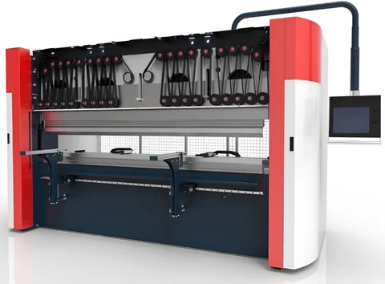
NC torsion-bar
On an NC press brake the two cylinders are tied together by a torsion shaft instead of being controlled separately, and the control sets the ram stop and the back gauge. It is the simplest and lowest-priced press brake and suits repeat parts in a small shop. It cannot tilt the ram for tapered bends, and the angle depends more on the operator.
Back gauge axes, crowning and the options that matter
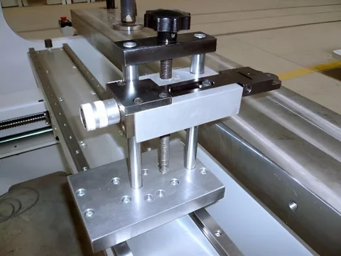
A CNC press brake controls the ram (Y1 and Y2), the back gauge and the crowning from one program. The back gauge axes decide how many different parts the machine handles without a manual set-up:
- X moves the fingers front to back for the flange length. Every CNC brake has it — on a ball screw with linear guides, 500 – 1,000 mm of travel.
- R moves them up and down, so the fingers follow dies of different heights and stepped flanges. On the standard 2-axis gauge R is set by hand with a knob; on a 4-axis gauge it is a CNC axis.
- Z1 and Z2 move each finger sideways, so several set-ups can sit along the bed at once and the fingers go where the part is.
- X1 and X2 (or X′) move each finger front to back separately, for tapered and angled flanges.
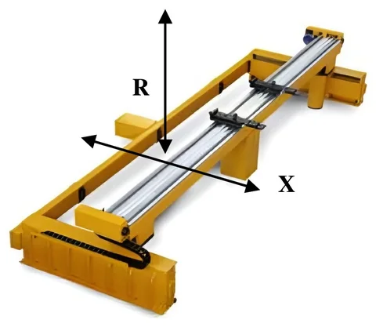
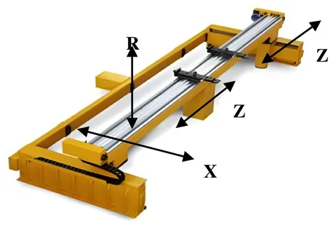
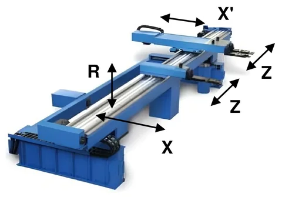
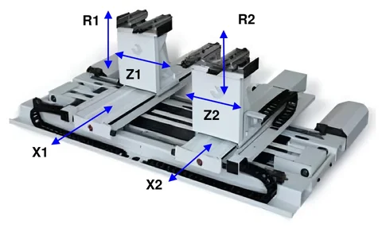
For a job shop, X and R are the minimum; a 4-axis gauge (X, R, Z1, Z2) pays for itself as soon as you run several set-ups along the bed; the 6-axis ATF gauge earns its price when you bend many short batches of different parts and want the fingers to find every flange by themselves. A multi-step finger design extends the reach — three stops on each finger give 765 mm (30″) of gauging from a 500 mm ball screw.
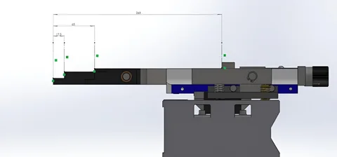
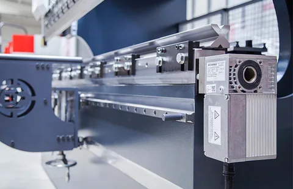
Crowning matters on every brake longer than about 8 ft. Under load the bed and the ram bow slightly, so the middle of a long bend comes out more open than the ends. Crowning — hydraulic cylinders in the bed or a motorised wedge system, set by the CNC — bends the bed back by the same amount, so the angle is the same along the whole length. Manual crowning (a hand-wheel) is enough for a machine that bends the same thickness all day; CNC crowning is the option for mixed work.
Supports and followers. Two linear-guided front supports with stops and scales are standard on the premium line (and the first thing an operator misses on a bare machine). CNC sheet followers that rise with the bend are worth having on plate and long panels: a 10 ft sheet of 10 ga weighs 40 kg and would otherwise be held up by two people. Hardened support columns, an oil cooler for shops that run two shifts, automatic lubrication, a robot interface and tandem operation — two machines on one control for 20 to 60 ft parts — are the other options the premium line offers.
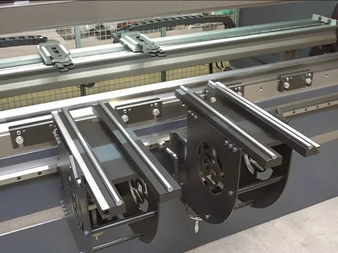
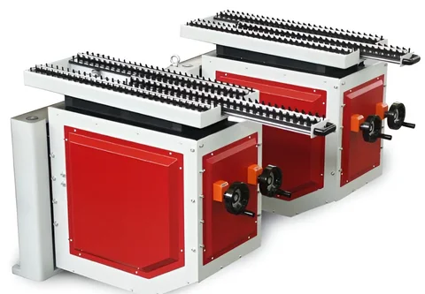
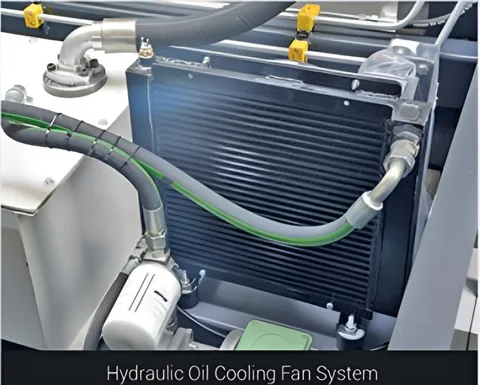
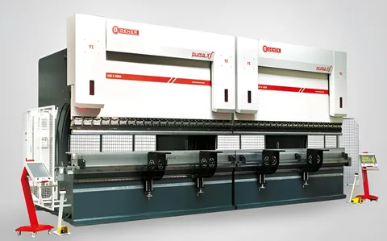
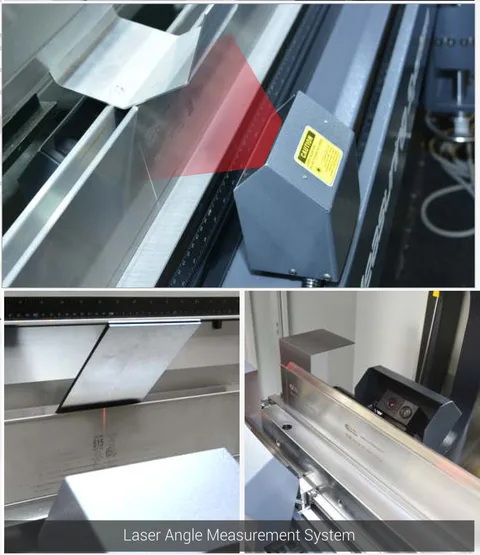
Laser angle measurement. Springback changes from one sheet to the next, even inside one grade and one thickness, so a brake that relies only on its depth calculation may need a trial bend and a correction. An angle-measuring system reads the angle with lasers on both sides of the bend line while the part is still under the punch, at one or more points along the bend, and the control adds the missing stroke before the ram opens. The first part comes out right without a protractor, set-up time and scrap fall, and the result no longer depends on how carefully the operator measures. On the Dener XL the system holds the angle to 0.05°. It has two limits: very shiny sheet, such as polished or mirror-finish stainless, can disturb the reading, and the flange must be tall enough for the lasers to see it. It pays for itself on expensive material, in short batches and on parts where an angle out of tolerance is scrap; on long runs of one part a single trial bend costs little.
Press brake controls explained — ESA, Delem, Cybelec and Estun
The control is the part of a press brake the operator touches all day, and the part brochures explain worst. This is what each one on our machines does, which machine it comes on, and how to choose.
NC or CNC, and numeric, 2D or 3D programming
An NC control positions two things — the back gauge (X) and the ram stop (Y) — from numbers the operator types in, step by step; the cylinders are kept level by a torsion bar, so the control does not have to synchronise them. It is quick to learn, cheap and reliable, and right for the same parts in one material. A CNC control closes the loop: linear scales measure the ram on both sides and servo valves correct it, so the control can tilt the ram, change material in the program and calculate the depth for each angle from the thickness, the tool and the material. Within CNC, what differs is how a part is programmed:
- Numeric programming (Delem DA-53Tx, Cybelec CybTouch 12): the operator enters each bend as numbers — angle, flange length, tool — and the control calculates the ram depth and the gauge position. The screen shows the tools and the bend graphically, and a tool and material library takes the arithmetic away. Fast for simple parts; the operator decides the bend order.
- 2D graphic programming (Delem DA-58Tx and DA-66S, ESA S840 touch design, Cybelec TouchProfile): the operator draws the cross-section of the part with the thumb and the control works out the bend sequence, checks for collisions with the tools and the machine, and simulates the part at scale. The DA-66S adds a 3D view of the machine while it simulates a 2D profile. The right choice for brackets, channels and enclosures programmed at the machine.
- 3D programming (Delem DA-69S, ESA S875 W): the part is imported as a 3D model (STEP, IGES, DXF) or drawn in 3D, unfolded, the tools chosen automatically and the whole sequence simulated with collision control before the first sheet is loaded. Programs are prepared in the office with the offline software (Profile-S3D, EsaBend 3D) and sent to the machine over the network. The choice for deep boxes, asymmetric parts, a high mix and a shop that already works from CAD.
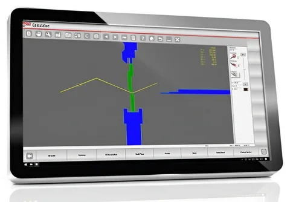
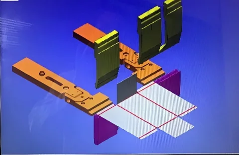
The four controls on the Dener premium line
Every Dener press brake is sold with one of four controls: the 15.6″ ESA S840 2D touch screen as standard on the XL and DDS, the 21.5″ ESA S875 W as standard on the DDM and as the option on the others, and the 24″ Delem DA-66S and DA-69S as alternatives for shops that run Delem on their other machines.
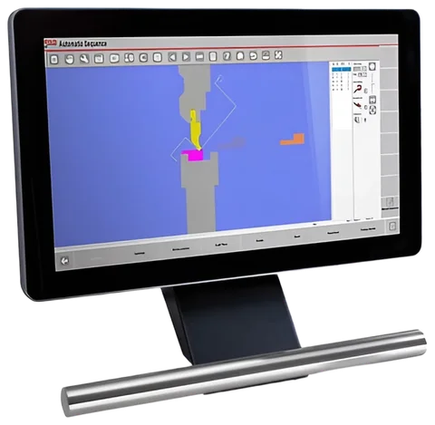
ESA S840 — 15.6″ touch screen, numeric and 2D graphic programming, up to 6 axes (standard on the XL and DDS; option on the value line). Made by ESA Automation in Italy — the standard control of the Dener press brakes. A 15.6″ touch screen with numeric programming and the touch design 2D mode: draw the profile with a finger, let the control find the bend sequence and check collisions against the tools and the machine, then run. It calculates the tonnage, the depth for every angle, springback by material and the crowning; stores programs and tool libraries internally or on USB; interfaces with the safety PLC, a robot and the automatic angle measurement; and a bending-angle correction database learns the deviation per material and thickness so the second part is right. Up to 6 axes on EtherCAT, CANopen or analog interfaces, so it drives the 4-axis and 5-axis back gauges and CNC crowning, on a real-time operating system that starts in seconds. Remote diagnostics over the network are standard. What it does not do: import 3D CAD files or simulate in 3D — for that you step up to the S875 W.
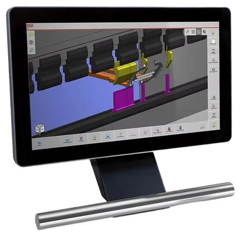
ESA S875 W — 21.5″ Full HD multi-touch, 3D, Windows PC (standard on the DDM, option on the XL and DDS). A full industrial PC (Intel i5, Windows) behind a 21.5″ multi-touch screen, running EsaBend 3D: import STEP, IGES or DXF parts and unfold them, draw tool shapes from DXF, automatic bend sequence search with collision control, 3D simulation of the part, tools and machine, automatic and manual adjustment of every axis in the graphic, direct loading of files at the control and a hard disk for over a million programs. Up to 128 axes, which is why it runs the tandem and robot cells. The same EsaBend 3D runs offline on an office PC (sold with a dongle), and Metalix MBend programs it from SolidWorks. The control for a shop that programs from CAD, bends deep boxes and complex parts, or wants the office to prepare the work while the machine runs.
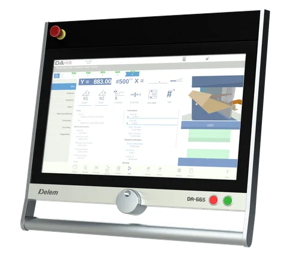
Delem DA-66S — 24″ multi-touch, 2D graphic programming with a 3D machine view (option on every Dener; option on the value line). Made by Delem in the Netherlands, the successor of the DA-66T (which is discontinued). A 24″ Full HD (1920 × 1080) high-brightness screen with an industrial capacitive touch panel on an embedded real-time Linux system that starts in seconds and survives a power cut. 2D graphic programming of the product and the tools with automatic bend sequence calculation and collision detection, full 3D machine set-up with several tool stations, and a 3D representation of the machine in simulation and production. 4 GB of storage, USB, Windows networking and OPC UA for Industry 4.0, a barcode reader, a protractor and sensor bending interface, tandem capability (TandemLink), and Delem's Modusys bus so the control grows with the machine. Offline: Profile-S2D. The control for a Delem shop that programs 2D at the machine and wants the biggest screen in the business.
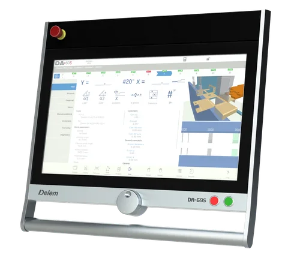
Delem DA-69S — 24″ multi-touch, full 3D (option on every Dener; option on the value line). The same 24″ hardware as the DA-66S with 3D graphical programming: the part is drawn or imported in 3D, the control calculates the sequence and the tools, checks collisions and shows the 3D part, tools and machine in simulation and in production. X1–X2 angle programming, frame-deflection compensation, sheet-thickness measurement and compensation, part-support control, OPC UA, TandemLink and the second-monitor option (DD-60S) for a camera or documentation. Offline: Profile-S3D. The Delem alternative to the ESA S875 W for a CAD-driven shop; Profile-S3D is also the way an office prepares programs for several Delem machines.
The controls on the NovoTech value line
The value-line CNC brakes (WAD, WADG) are built with the 15″ Delem DA-53Tx as standard; the NC torsion-bar brakes (WC67K) with the Estun E21PS. Because they are built to our specification, the whole list below — and the ESA S840 and S875 W above — can be fitted to order; the control a shop already runs is usually the right one.
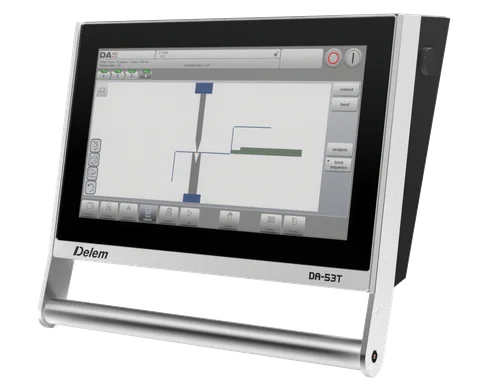
Delem DA-53Tx — 15″ multi-touch, numeric programming with a graphic view, up to 4 axes (standard on the value-line CNC and electric brakes). The control most Canadian job shops have run for the last ten years, in its current panel-based version with a 15″ (1366 × 768) multi-touch screen. Numeric programming with a 2D view of the tools and the product, a tool, material and product library, crowning control, servo and frequency-inverter control, advanced Y-axis algorithms for closed-loop and open-loop valves, hot-key navigation between programming and production, USB and (as options) networking, OPC UA, a hand-wheel and Z-Link for Z axes. 1 GB storage, offline Profile-T. Up to 4 axes (Y1, Y2, X, R) plus crowning — enough for the 4+1-axis value-line machines. What it lacks: automatic bend sequencing and collision checks — the operator chooses the order.
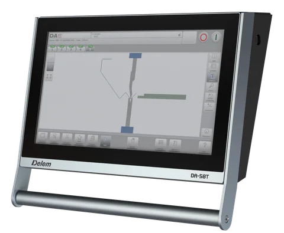
Delem DA-58Tx — 18.5″ multi-touch, 2D graphic programming with automatic bend sequence (option on the value line). The step up from the DA-53Tx on the same compact platform: an 18.5″ (1366 × 768) multi-touch screen, 2D graphical programming of the product, automatic bend sequence calculation with collision detection and a real-scale simulation of the machine and tools, up to 4 axes, crowning, servo and inverter control, USB, networking, OPC UA, Z-Link, TandemLink, a protractor interface and the DHT-01 hand-wheel. Offline Profile-T. For a job shop that programs varied parts at the machine and does not need 3D.
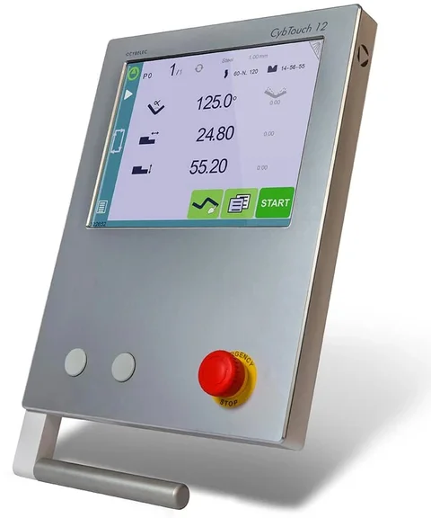
Cybelec CybTouch 12 PS — 12″ touch, 2D TouchProfile, 4 axes (option on the value line). Made by Cybelec in Switzerland for synchronised press brakes with four axes (Y1, Y2, X, R). A 12″ colour touch screen with large keys and on-line help; TouchProfile — draw the profile and the control creates the program; an EasyBend page for the urgent single bend without leaving the running program; automatic calculation of bend depth, pressure, allowance, back-gauge position and crowning; 300 programs, 100 punches and dies, 10 materials; wizards for the gauge and beam set-up; an eco mode that stops the pump when the machine idles. Bends are put in order by hand as standard: automatic bend sequencing is a software option, and collision checking is not part of the standard control; programs and tools move by USB stick or the RFLink wireless key, and the offline software (OFT-VST, 2D or 3D) programs all CybTouch and VisiTouch controls. Simple, robust, well known in Canada from retrofits.
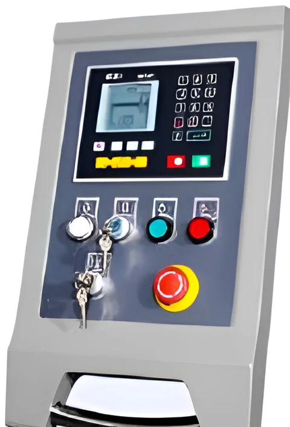
Estun E21PS — NC for torsion-bar press brakes, X and Y (standard on the value-line NC brakes). Made by Estun in China and fitted to more NC press brakes than any other control. It positions the back gauge and the ram stop for 40 programs of 25 steps each: one-way or two-way positioning so the lead-screw backlash never reaches the part, a retreat (escape) of the gauge during the bend, an automatic reference search, one-button backup and restore, a quick teach of positions, angle and gauge corrections, a stroke counter and inch or millimetre units. Learned in an hour, repaired with a screwdriver. It does not calculate the depth from an angle — the operator sets it with a test bend — and it does not control the cylinders separately.
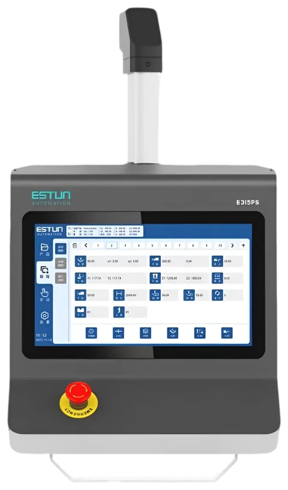
Estun E315PS — 15.6″ capacitive touch, 6+1 axes, angle programming (option on the value-line NC brakes). The touch-screen step up from the E21PS on the same torsion-bar machines: enter the angle and the control calculates the Y position from the tool and material database, multi-step programs with pressure-hold time and retract, manual micro-adjustment of every axis and Estun ED3L servo drives for the gauge. For a shop that wants a modern screen and angle programming without paying for a synchronised CNC machine.
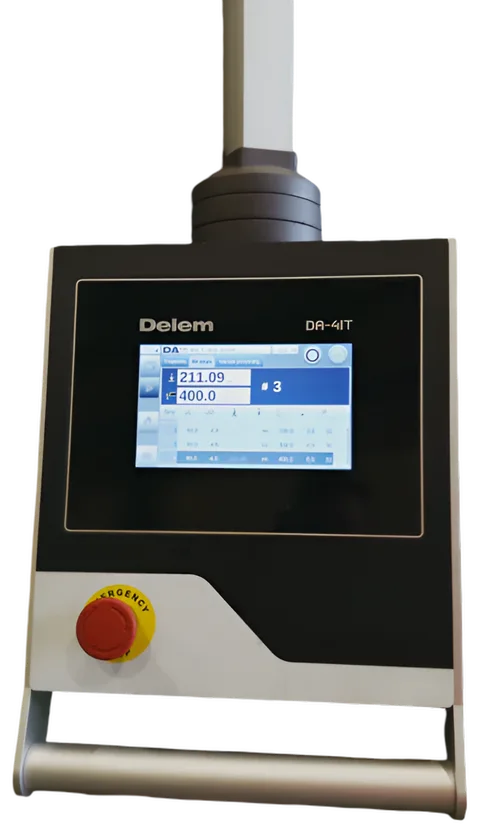
Delem DA-41T — 7″ touch NC, Y and X, 100 programs (option on the value-line NC brakes). Delem's control for conventional torsion-bar press brakes: a 7″ widescreen touch panel (1024 × 600) mounted in the cabinet, numerical programming with angle programming, a tool library, 100 programs of 25 steps, retract, manual movement of all axes, USB backup and the Profile-41T offline software; the DA-42T version adds an R axis, crowning and pressure control. The Delem choice for an NC brake.
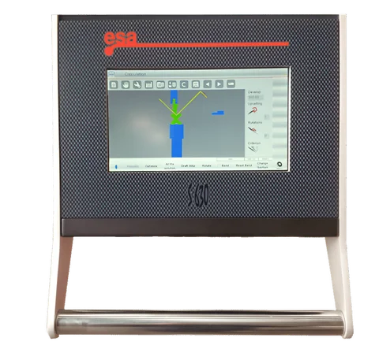
ESA S630 — 10″ touch, numeric and 2D, up to 4 axes (option on the value-line NC brakes). The compact member of the ESA 600 range: a 10″ resistive touch screen with the same interactive 2D programming, tonnage calculation and offline programming as its bigger brothers, for up to 4 axes, in a panel-mount housing. The automatic bend sequence with its collision check is an option on it. The ESA option for a small machine.
Side by side
| Control | Made by | Type · screen | Programming | Automatic bend sequence | Collision check | Axes | Offline software | Fitted on | Strengths | Limits |
|---|---|---|---|---|---|---|---|---|---|---|
| ESA S840 | ESA, Italy | CNC · 15.6″ touch | Numeric + 2D touch design | Yes | Yes — 2D: part, tools and machine | to 6 | ESA offline PC software | Dener XL, DDS (standard); value line (option) | Tonnage, depth and springback calculated; angle database; robot and safety interfaces; EtherCAT axes; simple to learn | No 3D import or simulation |
| ESA S875 W | ESA, Italy | CNC · 21.5″ Full HD multi-touch PC | 3D (EsaBend 3D), STEP / IGES / DXF import | Yes | Yes — full 3D simulation | to 128 | EsaBend 3D, Metalix MBend | Dener DDM (standard); XL, DDS (option) | Program from CAD; 3D simulation; a million programs; runs tandems and robot cells | Price; more control than a one-part shop needs |
| Delem DA-66S | Delem, Netherlands | CNC · 24″ Full HD multi-touch | 2D graphic with a 3D machine view | Yes | Yes — 2D, shown on the 3D machine | Modusys (scalable) | Profile-S2D | Dener (option); value line (option) | Biggest screen; Linux reliability; OPC UA; grows with the machine | 2D product only |
| Delem DA-69S | Delem, Netherlands | CNC · 24″ Full HD multi-touch | 3D and 2D graphic, 3D simulation | Yes — 2D and 3D | Yes — full 3D | Modusys (scalable) | Profile-S3D | Dener (option); value line (option) | Full 3D on a Delem; deflection and thickness compensation | Price; needs CAD data to pay off |
| Delem DA-53Tx | Delem, Netherlands | CNC · 15″ multi-touch | Numeric with 2D tool / product view | No — the operator sets the order | No | to 4 (+ Z-Link) | Profile-T | Value-line WAD, WADG (standard) | Known to every operator; crowning; tool library; low cost | Numeric programming only |
| Delem DA-58Tx | Delem, Netherlands | CNC · 18.5″ multi-touch | 2D graphic, real-scale simulation | Yes | Yes — 2D | to 4 (+ Z-Link) | Profile-T | Value line (option) | 2D graphic at a compact price | No 3D; 4 axes |
| Cybelec CybTouch 12 PS | Cybelec, Switzerland | CNC · 12″ touch | TouchProfile 2D with manual sequencing, EasyBend page | Option | No — not in the standard control | 4 | OFT-VST (2D / 3D) | Value line (option) | Simple, robust, wireless transfer, eco mode | Small screen; 4 axes |
| Estun E21PS | Estun, China | NC · LCD keypad | Numeric: ram depth (Y) and gauge (X) | No | No | 2 | — | Value-line WC67K (standard) | Simple, cheap, proven on torsion-bar brakes; backlash-free positioning | The operator enters depths, not angles; no synchronised ram |
| Estun E315PS | Estun, China | NC · 15.6″ capacitive touch | Numeric with angle programming, tool / material database | No | No | 6+1 | — | Value-line WC67K (option) | Angle programming and a modern screen on an NC machine | Torsion-bar machine limits still apply |
| Delem DA-41T | Delem, Netherlands | NC · 7″ touch, panel | Numeric with angle programming | No | No | 2 (DA-42T: + R) | Profile-41T | Value-line WC67K (option) | Delem quality on an NC brake; 100 programs | Small screen; NC only |
| ESA S630 | ESA, Italy | CNC/NC · 10″ touch, panel | Numeric + interactive 2D | Option | Option — with the 2D sequence calculation | to 4 | ESA offline PC software | Value-line WC67K (option) | Interactive 2D on a small machine | Resistive touch; small screen |
How to choose
- Same parts, one material, a small shop: an NC brake with the Estun E21PS, on which the operator enters the ram depth for each bend. To program the angle instead and let the control work out the depth, choose the Estun E315PS or the Delem DA-41T.
- A job shop programming at the machine: the Delem DA-53Tx is enough for simple parts; the DA-58Tx (value line) or the ESA S840 (Dener standard) when the operator should not have to work out the bend order and the collisions.
- A high mix of boxes and complex parts, or an office that prepares the work from CAD: a 3D control — ESA S875 W or Delem DA-69S — with the offline software on a PC.
- A shop standardised on one maker: stay with it. Delem, ESA and Cybelec can all be fitted to the value line; Dener fits ESA or Delem.
- Tandem, robot cell, angle measurement: ESA S875 W (128 axes) or the Delem 60S series.
NovoTech's technicians commission the control, load your tools and materials and train the operators at installation; remote diagnostics through the control's network connection are standard on every CNC machine.
Tooling and clamping
Most press brakes in Canada take European-style (Amada-Promecam) tooling; others use the hydraulic New Standard clamping of Wila and Trumpf, or the American .500″ tang. A Dener press brake ships with a sectioned EUROSTAMP 85° punch 1281 (R 0.8 mm, 104.65 mm high, rated 100 t/m) and the EUROSTAMP 4-way die 2067 — 16, 22, 35 and 50 mm openings in one 60 mm block, which covers 16 ga to 1/4″ — in Euro / American segmented holders that take both European and American punches; the value-line brakes ship with a sectioned punch set and a 2-V die. Quick-release clamps (Dener's lever front plates, the EUROSTAMP Z1 / Z2 quick clamps, Wilson Express clamps) and Wila hydraulic clamping are options on every line: they cut a tool change from minutes to seconds, and for a high-mix shop they are worth more than a faster ram.
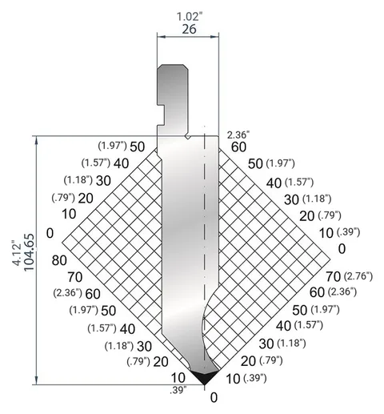
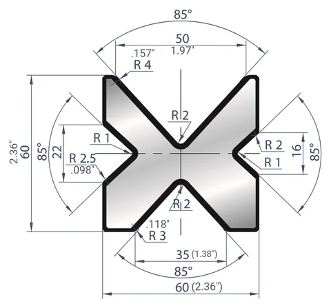
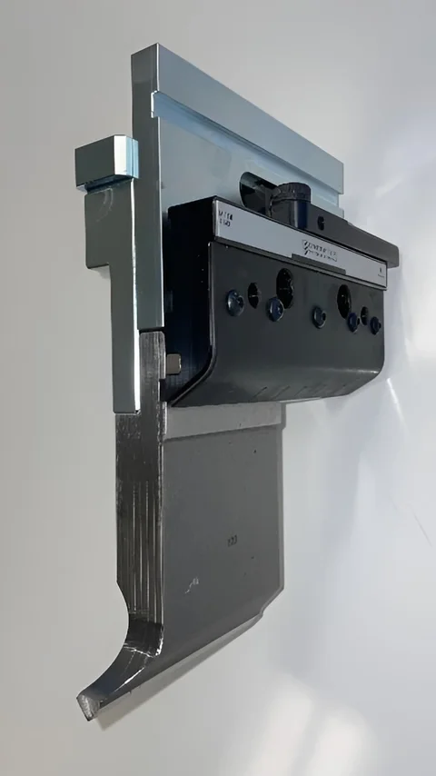
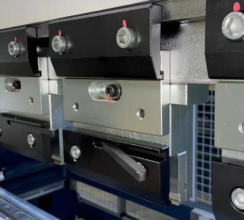
A practical first set beyond the standard tools is an 88° gooseneck punch for return flanges and boxes, a set of 1V dies covering 6 – 10 × your common thicknesses, and sectioned punches with horns for boxes. Check the open height and stroke against the tallest punch you need: a deep box needs a tall gooseneck punch and enough height to lift the finished box out. The press brake tooling guide has the full tonnage chart and the clamping styles.
Safety, installation and support in Canada
Every press brake needs point-of-operation guarding. Laser finger protection (DSP or Fiessler type) or light curtains are the standard on CNC machines, with side and rear guards and a foot pedal with an emergency stop. In Ontario, a new press brake needs a pre-start health and safety review (PSR) under Regulation 851 before it runs.
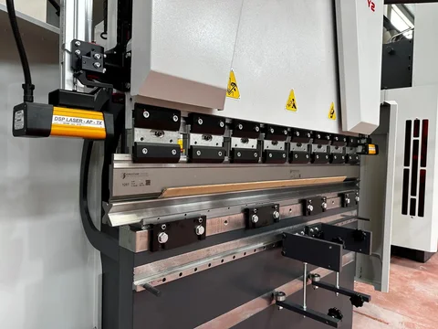
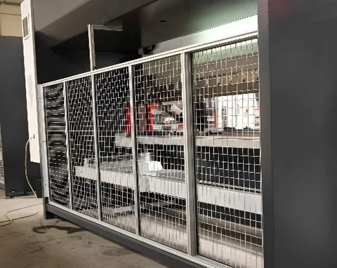
NovoTech supplies three-phase press brakes for 600 V with a CSA-approved panel as standard (208, 240 or 480 V on request). To quote, we need:
- the thickest and the longest bend, and the material grade
- drawings of a few typical parts
- how many different parts you bend and your batch sizes
- the voltage in your shop
From those we size the tonnage, the length, the back gauge and the tooling.
Questions we get asked about press brakes
Hydraulic, hybrid or electric — which press brake should I buy?
Hydraulic gives the lowest price per ton and full force over the whole stroke — the machine for thick plate, long parts and the widest tonnage range (33 to 1,323 US tons (1,200 t) here). A hybrid is a hydraulic brake with servo-driven pumps — the mild hybrid option on the Dener XL (42 – 58 % less energy, faster, quieter) — for a shop that runs the brake all day. An electric brake (Dener DDM, NovoTech WADG) has no oil at all: ±0.01 mm repeatability, bending speeds to 30 mm/s and about 70 % less power — usually the better buy for 16 ga to 1/4″ sheet in a job shop or a clean environment. Above about 150 tons (136 t) and on 3/8″ plate, hydraulic still wins. For 4 – 5 ft work in sheet to 3/16″, the compact brakes on their own page are the right size.
Premium line or value line?
Both kinds come in two lines, on the same page. The premium line is made in Turkey by Dener on the heaviest frame, with ESA or Delem controls, the longest options list and parts stocked in Canada — the machine for plate and production, two shifts a day. NovoTech's own value line is the same architecture — monoblock frame, servo valves, linear scales, Delem control — built in China to our specification at about two-thirds of the price: the right buy for a job shop that needs a 100 – 300 ton (91 – 272 t) CNC brake, an electric brake for sheet or an NC brake for repeat parts. The compact page has the smallest of both lines — the Dener XL 1560 and the value-line WAD-50T and WC67K-30T — for HVAC, enclosures and brackets where a 100-ton (91 t) machine is more than you need. All are installed and supported by the same NovoTech technicians.
How much tonnage and length do I need?
Air bending takes F = S² × 2 × R ÷ (1.4 × V) tonnes per metre of bend — the sheet thickness S and the V opening V in millimetres, the tensile strength R = 47 kg/mm² for mild steel (70 for stainless, 25 for aluminum), the formula behind the EUROSTAMP and Dener bending charts; in inches and US tons per foot it reads 575 × t² ÷ V. With the standard V of about 8 × the thickness, 3 mm needs about 24 t/m (8 US tons per foot), 6 mm 48 t/m (16), 1/4″ 54 t/m (18), 3/8″ in a 3″ V 80 t/m (27) and 1/2″ in a 5″ V 85 t/m (29). Multiply by the bend length and add about 20 % in reserve: 3 m × 6 mm is a 175-ton (159 t) press brake, 10 ft × 1/4″ a 200 – 220 US ton (181 – 200 t) machine, 10 ft × 3/8″ a 300 – 320 ton (272 – 290 t) machine and 13 ft × 1/2″ a 400 – 450 ton (363 – 408 t) machine. The tonnage calculator in the buying guide on the press brake page does the arithmetic for your thickness and length; tell us your thickest and longest bend and we size the brake and the tooling.
CNC or NC?
An NC brake positions the back gauge and the ram depth from a stored program, with the two cylinders kept in step by a torsion bar — rigid, cheap to maintain, right for the same parts in one material every day. A CNC brake measures the ram on linear scales and corrects it through servo valves, calculates the bend from the drawing, crowns the bed and changes material in the program — the machine for mixed work, tight angles and multi-bend parts. NovoTech's value line has both; the Dener CNC brakes come with 2D or 3D graphic controls. The buying guide below explains and compares every control.
What tooling fits, and do you stock it?
European-style (Promecam / Amada) segmented tooling fits every line: the premium Dener brakes carry European-style top-tool holders, the value-line brakes their own clamping, and a sectioned punch set with a 2-V or 4-V die ships with every machine (a 4-V die with the Dener brakes, a 2-V die with the value line) — tell us which tooling standard your shop already has and we fit the holders to match. NovoTech stocks Eurostamp press brake tooling in Canada — punches, dies, radius, hemming and joggle tools, gooseneck and special profiles — and sizes it to your machine; quick-release, pneumatic and Wila hydraulic clamping and American-style adapters are options, not standard equipment.
What about safety and the Ontario pre-start review?
Side guards, an enclosed rear guard, interlocked doors and an anti-panic foot pedal with emergency stop are standard; DSP laser finger protection is standard on the WAD CNC press brakes and the Dener XL, and on the other machines DSP or Fiessler laser protection and light curtains are options we recommend for every CNC press brake. In Ontario a new press brake needs a pre-start health and safety review (PSR) under Regulation 851 before it runs.
Do you deliver, install and service in Canada?
Yes — NovoTech sells, installs and supports press brakes across Canada and the United States. Installation, commissioning and operator training are free of charge in the Greater Toronto Area; outside the GTA our technicians do the same work at an additional charge. Parts are stocked in Canada. Every machine comes with a CSA-approved panel, 600 V standard (208 / 240 / 480 V on request), a 1-year warranty and remote diagnostics through the control.
What does delivery cost, and who unloads the machine?
A press brake ordered from the factory (back-ordered) travels in its container straight from the port, customs and the rail yard to your plant door: in the Greater Toronto Area that delivery is free; outside the GTA the freight is quoted and charged. A machine from NovoTech's stock is loaded, shipped and unloaded at the buyer's cost. In every case unloading is the buyer's responsibility and expense — the crane or forklift, the rigging and moving the machine onto its foundation — so book a rigger for the delivery day; we are glad to recommend riggers who know press brakes and to tell you the weight and lifting points.
Is the hydraulic oil included?
No — the hydraulic oil is bought by the customer. Before commissioning, fill the tank with ISO VG 46 anti-wear hydraulic oil (AW 46) in the quantity shown in the specification table for your model; our technician checks the level and bleeds the system during installation. Electric press brakes have no hydraulic oil at all.
What voltage do these machines run on?
Three-phase machines are supplied for 600 V as standard with a CSA-approved panel; 208 V, 240 V and 480 V 3-phase are available on request, and 240 V single-phase on models whose main motor is 2.2 kW (3 HP) or less — a machine with a motor above 2.2 kW must run on three-phase power and cannot be converted to 240 V single-phase. Manual machines have no electrics.
Request a quote
Tell us which machine you are looking at and what you will run on it — material, sizes and voltage — and we will come back with pricing, delivery and the right options for your shop. We answer within one business day.
Prefer to talk? Call +1 647 526 5510 (Mon–Fri 9:00–17:00 Eastern) or email infoNovoTechMachineTools.com.
1365 Mid-Way Blvd, Unit 26, Mississauga, ON L5T 2J5, Canada
Represent NovoTech in your city or province
Sales agents wanted across Canada
NovoTech is appointing independent sales agents and dealers in cities and provinces across Canada — British Columbia, Alberta, Saskatchewan, Manitoba, Ontario outside the GTA, Quebec and Atlantic Canada. If you already call on steel fabricators, rebar shops, precast plants, HVAC shops or contractors, add a proven line of GMS, Dener and other metalworking machinery to what you offer.
- Open to individuals and companies with customers in metal fabrication or construction
- Quotations, brochures, videos and demonstrations prepared by NovoTech for your customers
- Installation, operator training, spare parts and technical support stay with NovoTech in Mississauga, ON, Canada
Tell us your territory and the customers you serve — we reply within one business day.